СП 276.1325800.2016 «Здания и территории. Правила проектирования защиты от шума»
О документе: разработчики, утверждение, регистрация, ключевые слова
СВОД ПРАВИЛ
СП 276.1325800.2016
1 ИСПОЛНИТЕЛИ - федеральное государственное бюджетное учреждение «Научно-исследовательский институт строительной физики Российской академии архитектуры и строительных наук» (НИИСФ РААСН), федеральное государственное бюджетное образовательное учреждение высшего образования «Московский автомобильно-дорожный государственный технический университет (МАДИ)», федеральное государственное бюджетное образовательное учреждение высшего профессионального образования «Балтийский государственный технический университет «ВОЕНМЕХ» им. Д.Ф.Устинова» (БГТУ «ВОЕНМЕХ» им. Д.Ф. Устинова)
2 ВНЕСЕН Техническим комитетом по стандартизации ТК 465 «Строительство»
3 ПОДГОТОВЛЕН к утверждению Департаментом градостроительной деятельности и архитектуры Министерства строительства и жилищнокоммунального хозяйства Российской Федерации (Минстрой России)
4 УТВЕРЖДЕН приказом Министерства строительства и жилищнокоммунального хозяйства Российской Федерации от 3 декабря 2016 г. № 893/пр и введен в действие с 4 июня 2017 г.
5 ЗАРЕГИСТРИРОВАН Федеральным агентством по техническому регулированию и метрологии (Росстандарт)
В случае пересмотра (замены) или отмены настоящего свода правил соответствующее уведомление будет опубликовано в установленном порядке. Соответствующая информация, уведомление и тексты размещаются также в информационной системе общего пользования на официальном сайте разработчика (Минстрой России) в сети Интернет
© Минстрой России, 2016
Настоящий нормативный документ не может быть полностью или частично воспроизведен, тиражирован и распространен в качестве официального издания на территории Российской Федерации без разрешения Минстроя России
грунтового шумозащитного вала………………………………………………
- 11.4 Расчет акустической эффективности шумозащитного экрана в виде шумозащитной выемки……………………………………………………………….
11.5 Комбинированные шумозащитные сооружения……………………………...
- 12 Расчет требуемого снижения транспортного шума шумозащитными окнами в жилых и общественных зданиях
и рекомендации по их выбору…………………………………………………………..
- 13 Методика составления оперативных карт шума (зон акустического дискомфорта) городов…………………………………………….
- 13.1 Расчет параметров зон акустического дискомфорта вокруг транспортных магистралей…………………………………………………..
- 13.2 Оценка степени зашумленности территорий жилых, общественно-деловых и рекреационных зон на основе оперативных карт шума (зон акустического дискомфорта)………………………………………
Приложение А (справочное) Энергетическое суммирование эквивалентных уровней звука, создаваемых несколькими источниками шума…………..
- Приложение Б (справочное) Последовательность и пример расчета шумозащитного экрана………………………………………………..
Приложение В (справочное) Пример расчета требуемого снижения транспортного шума шумозащитным окном ……………………
Приложение Г (справочное) Пример расчета размеров зоны акустического дискомфорта вокруг транспортной магистрали и оценка степени ее зашумленности ………………………………
Библиография………………………………………………………………………….
СП 276
.1325800.2016
Дата введения ─ 2017-06-04
УДК 534.836.2 ОКС 13.020.30
13.140
17.140.01
17.140.30
Ключевые слова: транспорт, автомобиль, трамвай, троллейбус, железнодорожный поезд, метропоезд, шум, расчет, оперативная карта шума, шумозащитное мероприятие, экран, шумозащитное окно, эффективность
| Руководитель организации-разработчика ФГБУ «Научно-исследовательский институт строительной физики Российской академии архитектуры и строительных наук» - директор, д.т.н. | И.Л. Шубин |
|---|---|
| Руководитель разработки - директор, докт. техн.наук | И.Л. Шубин |
| Исполнители: Ведущий научный сотрудник Главный научный сотрудник Старший научный сотрудник Научный сотрудник | В.А. Аистов М.А.Пороженко Н.А. Минаева Г.Н. Михеева |
| СОИСПОЛНИТЕЛИ Руководитель организации-разработчика ФГБОУВО «Московский автомобильно-дорожный государственный технический университет (МАДИ)» - проректор по научной работе, докт. техн. наук, доцент | А.А. Солнцев |
| Руководитель разработки - докт. техн.наук, профессор | П.И.Поспелов |
| Исполнитель - канд. техн. наук, доцент Руководитель организации-разработчика ФГБОУВПО «Балтийский государственный | Б.А.Щит |
| технический университет «ВОЕНМЕХ» им. Д.Ф.Устинова» - ректор, докт.техн. наук, профессор | К.М.Иванов А.Е. Шашурин |
| Руководитель разработки - канд. техн. наук , доцент Исполнители: | |
| Канд. техн. наук, главный специалист Научный сотрудник | М.В.Буторина Ю.С. Бойко |
| Канд. техн. наук, доцент | Д.А.Куклин |
Введение
6 ВВЕДЕН ВПЕРВЫЕ
Настоящий свод правил разработан с учетом требований, установленных в федеральных законах от 27 декабря 2002 г. № 184-ФЗ «О техническом регулировании», от 30 декабря 2009 г. № 384-ФЗ «Технический регламент о безопасности зданий и сооружений», а также в постановлении Правительства Российской Федерации от 19 ноября 2008 г. № 858 «О порядке разработки и утверждения сводов правил» и содержит требования к расчету и проектированию защиты от шума потоков автомобильного и рельсового транспорта на уличнодорожной сети и железнодорожных вводах городов и других населенных пунктов.
Свод правил разработан авторским коллективом НИИСФ РААСН (д-р техн. наук И.Л. Шубин , инж. В.А. Аистов, М.А. Пороженко, Н.А. Минаева, Г.Н. Михеева ), МАДИ (д-р техн. наук П.И. Поспелов , канд. техн. наук Б.А. Щит ), БГТУ «ВОЕНМЕХ» им. Д.Ф. Устинова (канд. техн. наук А.Е. Шашурин , канд. техн. наук Д.А. Куклин , канд. техн. наук М.В. Буторина , инж. Ю.С. Бойко ).
ЗДАНИЯ И ТЕРРИТОРИИ Правила проектирования защиты от шума транспортных потоков
Buildings and territories. Protection design rules from traffic noise
1Область применения
- на правила расчета шумовых характеристик потоков автомобильного и рельсового транспорта;
- правила оценки и прогнозирования распределения уровней транспортного шума на территориях и в помещениях жилых и общественных зданий, прилегающих к транспортным дорогам;
- проектирование мероприятий по снижению уровней транспортного шума на территориях и в помещениях жилых и общественных зданий, а также на проектирование наиболее эффективных мероприятий по защите от транспортного шума территорий жилых, общественно-деловых и рекреационных зон и расположенных на них жилых и общественных зданий,
\_\_\_\_\_\_\_\_\_\_\_\_\_\_\_\_\_\_\_\_\_\_\_\_\_\_\_\_\_\_\_\_\_\_\_\_\_\_\_\_\_\_\_\_\_\_\_\_\_\_\_\_\_\_\_\_\_\_\_\_\_\_\_\_\_\_\_\_\_\_
- правила разработки оперативных карт шума отдельных территорий (населенного пункта в целом).
2Нормативные ссылки
В настоящем своде правил использованы нормативные ссылки на следующие документы:
ГОСТ 12.2.056-81 Система стандартов безопасности труда. Электровозы и тепловозы колеи 1520 мм. Требования безопасности
ГОСТ 9238-2013 Габариты железнодорожного подвижного состава и приближения строений
ГОСТ 12090-80 Частоты для акустических измерений. Предпочтительные ряды
ГОСТ 17187-2010 (IEC 61672-1:2002) Шумомеры. Часть 1. Технические требования
ГОСТ 20444-2014 Шум. Транспортные потоки. Методы определения шумовой характеристики
ГОСТ 23337-2014 Шум. Методы измерения шума на селитебной территории и в помещениях жилых и общественных зданий
ГОСТ 30244-94 Материалы строительные. Методы испытаний на горючесть
ГОСТ 31295.1-2005 (ИСО 9613-1:1993) Шум. Затухание звука при распространении на местности. Часть 1. Расчет поглощения звука атмосферой
ГОСТ 31295.2-2005 (ИСО 9613-2:1996) Шум. Затухание звука при распространении на местности. Часть 2. Общий метод расчета
ГОСТ 31296.1-2005 (ИСО 1996-1:2003) Шум. Описание, измерение и оценка шума на местности. Часть 1. Основные величины и процедуры оценки
СП 276
.1325800.2016
ГОСТ 31296.2-2006 (ИСО 1996-2:2007) Шум. Описание, измерение и оценка шума на местности. Часть 2. Определение уровней звукового давления
ГОСТ 31329-2006 (ИСО 2922:2000) Шум. Измерение шума судов на внутренних линиях и в портах
ГОСТ 33325-2015 Шум. Методы расчета уровней внешнего шума, излучаемого железнодорожным транспортом
ГОСТ 33329-2015 Экраны акустические для железнодорожного транспорта. Технические требования
ГОСТ Р 41.51-2004 (Правила ЕЭК ООН № 51) Единообразные предписания, касающиеся сертификации транспортных средств, имеющих не менее четырех колес, в связи с производимым ими шумом
ГОСТ Р 53187-2008 Акустика. Шумовой мониторинг городских территорий
ГОСТ Р 56234-2014 Акустика. Программное обеспечение для расчетов уровня шума на местности. Требования к качеству и критерии тестирования
- СП 51.13330.2011 «СНиП 23-03-2003 Защита от шума»
МУК 4.3.2194-07 Контроль уровня шума на территории жилой застройки, в жилых и общественных зданиях и помещениях
СН 2.2.4/2.1.8.562-96 Шум на рабочих местах, в помещениях жилых, общественных зданий и на территории жилой застройки
Примечание - При пользовании настоящим сводом правил целесообразно проверить действие ссылочных документов в информационной системе общего пользования на официальном сайте федерального органа исполнительной власти в сфере стандартизации в сети Интернет или по ежегодному информационному указателю «Национальные стандарты», который опубликован по состоянию на 1 января текущего года, и по выпускам ежемесячного информационного указателя «Национальные стандарты» за текущий год. Если заменен ссылочный документ, на который дана недатированная ссылка, то рекомендуется использовать действующую версию этого документа с учетом всех внесенных в данную версию изменений. Если заменен ссылочный документ, на который дана датированная ссылка, то рекомендуется использовать версию этого документа с указанным выше годом утверждения (принятия). Если после утверждения настоящего свода правил в ссылочный документ, на который дана датированная ссылка, внесено изменение, затрагивающее положение, на которое дана ссылка, то это положение рекомендуется применять без учета данного изменения. Если ссылочный документ отменен без замены, то, положение, в котором дана ссылка на него, рекомендуется применять в части, не затрагивающей эту ссылку. Сведения о действии свода правил целесообразно проверить в Федеральном информационном фонде стандартов.
3Термины и определения
В настоящем своде правил применены следующие термины с соответствующими определениями:
- 3.1акустическая эффективность экрана, дБ (дБ А )
- Величина, определяемая как разность уровней звукового давления (уровней звука) в одной и той же точке наблюдения (расчетной точке) около защищаемого от шума объекта до и после установки шумозащитного экрана.
- 3.2акустический центр транспортного потока
- Условная точка для выполнения акустических расчетов уровней шума, производимого транспортным потоком. При определении шумовой характеристики транспортного потока и при исследовании распространения шума в открытом пространстве акустический центр транспортного потока принимают расположенным на высоте 1,0 м над уровнем проезжей части (для автомобильного транспорта) или над уровнем головки рельса (для рельсового транспорта) и на оси ближней к точке наблюдения полосы движения автомобильного транспорта или на оси ближнего к точке наблюдения пути передвижения рельсового транспорта.
- 3.3внешний источник шума
- Источник шума, расположенный вне здания с помещениями, в которых определяются уровни шума, или на территории вне пределов зданий. Примечание -В настоящем своде правил под внешним источником шума подразумевают транспортный поток (транспортные потоки) на улично-дорожной сети населенных пунктов и на загородных магистралях.
- 3.4защищаемый от шума объект
- Жилое, общественное здание и/или участок территории, которые необходимо защитить от сверхнормативного воздействия транспортного шума. СП 276 .1325800.2016
- 3.5звукоизоляция окна RА тран, дБ А
- Величина, служащая для оценки одним числом изоляции внешнего шума, создаваемого городским транспортом, при передаче его внутрь помещения через окно.
- 3.6звукоизоляция панели шумозащитного экрана, дБ
- Способность панели уменьшать проходящий через нее звук, рассчитываемая как десять десятичных логарифмов отношения интенсивности звука, падающего на одну из сторон панели, к интенсивности звука, излучаемого другой стороной панели.
- 3.7звукопоглощение панели шумозащитного экрана
- Способность панели частично поглощать падающий на нее звук.
- 3.8зона акустического дискомфорта
- Область территории, для которой уровни шума, создаваемые транспортными потоками, превышают допустимые уровни шума.
- 3.9корректированный уровень звукового давления, дБ А
- Уровень звукового давления, корректированный по заданной частотной характеристике шумомера. Примечание - Корректированный уровень звукового давления называют уровнем звука с указанием частотной характеристики шумомера по ГОСТ 17187 и выражают в децибелах также с указанием частотной характеристики шумомера. Например, корректированный по частотной характеристике А уровень звукового давления называют уровнем звука А LA и выражают в дБ А .
- 3.10коррекция, дБ
- Любое значение, положительное или отрицательное, которое прибавляют к измеренному или расчетному значению уровня шума, для того чтобы учесть влияние на него дополнительных факторов, связанных с местом измерения, происхождением шума, временем суток и т. п. или с особенностями источника шума.
- 3.11максимальный уровень звука А LА макс, дБ А
- Наибольший корректированный по А уровень звука на заданном временном интервале. На практике максимальный уровень звука А соответствует согласно ГОСТ 31296.1 уровню звука, превышаемому в течение 1 % времени измерений.
- 3.12оперативная карта шума
- Карта (план) территории с нанесенными на нее данными о шумовой обстановке, позволяющая оценить комплексное воздействие шума от всех или от отдельных источников шума на этой территории.
- 3.13опорное звуковое давление p 0, Па
- Установленное по соглашению фиксированное значение звукового давления в воздухе, равное 20 мкПа.
- 3.14отгон длины шумозащитного экрана, м
- Значение минимальной длины боковой части шумозащитного экрана за пределами защищаемой от шума территории (застройки), позволяющее защитить территорию (застройку) от проникания шума с боков основного экрана.
- 3.15оценочный уровень, дБ А
- Измеренное или рассчитанное значение уровня шума с учетом коррекции.
- 3.16точка наблюдения ( расчетная точка)
- Место на плане территории или здания, для которого проводят расчет (или измерение) уровней звука, дБ А , или уровней звукового давления, дБ.
- 3.17уровень звукового давления Lp , дБ
- Величина, равная десяти десятичным логарифмам отношения квадрата среднеквадратичного звукового давления, определенного при стандартных временнóй и частотной характеристиках измерительной системы по ГОСТ 17187, к квадрату опорного звукового давления. Примечание - Звуковое давление выражают в паскалях (Па).
- 3.18частотный диапазон, Гц
- Диапазон частот, включающий в себя октавные полосы со среднегеометрическими частотами от 31,5 до 8000 Гц по ГОСТ 12090.
- 3.19шумовая характеристика транспортного потока, дБ (дБ А )
- Эквивалентный и/или максимальный уровень звука, создаваемый транспортным потоком в опорной точке на расстоянии 7,5 м от оси ближайшей к точке наблюдения полосы движения автотранспортных средств (пути движения СП 276 .1325800.2016 трамваев), или в опорной точке на расстоянии 25 м от оси ближайшего к точке наблюдения пути движения средств рельсового или водного транспорта.
- 3.20шумозащитное окно
- Окно, обладающее повышенной звукоизоляцией и снабженное специальным приточно-вытяжным элементом, обеспечивающим нормативный воздухообмен в помещении.
- 3.21шумозащитное сооружение
- Элемент транспортной инфраструктуры, располагаемый между транспортной дорогой и защищаемыми от шума объектами и предназначенный для снижения уровня транспортного шума, воздействующего на защищаемые от него объекты, за счет образования акустической тени за элементом транспортной инфраструктуры.
- 3.22шумозащитный (акустический) экран
- Протяженная естественная преграда или искусственное шумозащитное сооружение на пути распространения шума от транспортного потока к защищаемому от шума объекту.
- 3.23эквивалентный уровень звука А LА экв, дБ А
- Величина, равная десяти десятичным логарифмам отношения квадрата среднеквадратичного звукового давления на заданном временнóм интервале, определенного при стандартной частотной характеристике А шумомера по ГОСТ 17187, к квадрату опорного звукового давления.
- 3.24эквивалентный уровень звукового давления L экв, дБ
- Величина, равная десяти десятичным логарифмам отношения квадрата среднеквадратичного звукового давления на заданном временнóм интервале, определенного при стандартных временнóй и частотной характеристиках измерительной системы по ГОСТ 17187, к квадрату опорного звукового давления.
4Общие положения
СП 276
.1325800.2016 транспорта, троллейбусов, трамваев, поездов на участках железных дорог и открытых линиях метрополитена.
При расположении жилой и общественной застройки на территориях, прилегающих к водным путям на реках, озерах и водохранилищах, она будет подвергаться воздействию внешнего шума судов внутреннего и смешанного плавания, судов прибрежного плавания всех типов, классов и назначения, эксплуатируемых в полосе на расстоянии менее 500 м от берега.
Это приводит к неблагоприятному шумовому режиму в застройке, не удовлетворяющему требованиям СН 2.2.4/2.1.8.562 и СП 51.13330 и способствующему нарушению здоровья населения, что в свою очередь требует осуществления шумозащитных мероприятий.
- отсутствие неблагоприятного влияния шумозащитных сооружений на безопасность дорожного движения, удобство эксплуатации дороги, экологическое состояние окружающей среды;
- отсутствие опасности для жизни и здоровья людей на защищаемых территориях;
- удобство монтажа и эксплуатации шумозащитного сооружения;
- соблюдение требований по пожарной безопасности и электробезопасности;
- эстетические качества шумозащитных сооружений, их гармоничное сочетание с окружающим ландшафтом;
- экономическую обоснованность принимаемых конструктивных решений по шумозащите.
- устанавливать ограничения или запрет на движение грузовых автомобилей и мотоциклов в пределах населенного пункта в определенное время суток;
СП 276
.1325800.2016
- ограничивать скорость движения автомобилей в транспортном потоке за счет применения технических средств организации дорожного движения;
- устраивать специальные дорожные покрытия, способствующие снижению шума от взаимодействия шин с дорожным покрытием.
- применение полимерных прокладок, которые устанавливаются между земляным полотном и щебеночным балластом, между шпалами и щебеночным балластом, между рельсами и шпалами;
- укладку бесстыкового пути;
- использование вагонов с дисковыми тормозами, что дает снижение шума примерно на 10 дБ А ;
- применение пневморессор;
- применение твердых смазочных материалов;
- периодический контроль состояния рельсового пути со шлифовкой рельсов (при необходимости);
- устранение волнообразного износа рельсов.
СП 276
.1325800.2016 шума должны быть рассмотрены в подразделе общей пояснительной записки «Природоохранные мероприятия» и в разделе «Охрана окружающей среды» (пояснительная записка, обоснование природоохранных мероприятий по защите от шума, ведомость строительства запроектированных шумозащитных сооружений, рекультивация земель, объемы работ, чертежи шумозащитных сооружений).
На стадии проектирования данные разделы должны включать в себя оперативные карты шума на соответствующих территориях, расчеты прогнозируемых уровней шума у фасадов жилых и общественных зданий с нормируемыми уровнями шума и на площадках отдыха, а также перечень и обоснование мероприятий по защите от шума зданий и непосредственно прилегающих к ним территорий.
5Санитарное нормирование уровней шума в помещениях жилых и общественных зданий и на непосредственно прилегающих к ним территориях
Таблица 5.1 - Допустимые эквивалентные уровни звукового давления, эквивалентные и максимальные уровни звука проникающего шума в помещениях жилых и общественных зданий и шума на территории жилой застройки
| Назначение помещений или | Время суток | Эквивалентные уровни звукового давления L экв , дБ, в октавных полосах со среднегеометрическими частотами, Гц | Эквивалентные уровни звукового давления L экв , дБ, в октавных полосах со среднегеометрическими частотами, Гц | Эквивалентные уровни звукового давления L экв , дБ, в октавных полосах со среднегеометрическими частотами, Гц | Эквивалентные уровни звукового давления L экв , дБ, в октавных полосах со среднегеометрическими частотами, Гц | Эквивалентные уровни звукового давления L экв , дБ, в октавных полосах со среднегеометрическими частотами, Гц | Эквивалентные уровни звукового давления L экв , дБ, в октавных полосах со среднегеометрическими частотами, Гц | Эквивалентные уровни звукового давления L экв , дБ, в октавных полосах со среднегеометрическими частотами, Гц | Эквивалентные уровни звукового давления L экв , дБ, в октавных полосах со среднегеометрическими частотами, Гц | Эквивалентные уровни звукового давления L экв , дБ, в октавных полосах со среднегеометрическими частотами, Гц | Эквива- лентные уровни звука L А экв , дБ А | Макси- мальные уровни звука L А макс , дБ А |
|---|---|---|---|---|---|---|---|---|---|---|---|---|
| территорий | Время суток | 31,5 | 63 | 125 | 250 | 500 | 1000 | 2000 | 4000 | 8000 | Эквива- лентные уровни звука L А экв , дБ А | Макси- мальные уровни звука L А макс , дБ А |
| 1 Палаты больниц и санаториев, операционные больниц | С 7:00 до 23:00 С 23:00 до 7:00 | 76 69 | 59 51 | 48 39 | 40 31 | 34 24 | 30 20 | 27 17 | 25 14 | 23 13 | 35 25 | 50 40 |
| 2 Кабинеты врачей поликлиник, амбулаторий, диспансеров, больниц, санаториев | - | 76 | 59 | 48 | 40 | 34 | 30 | 27 | 25 | 23 | 35 | 50 |
| 3 Классные помещения, учебные кабинеты, учительские комнаты, аудитории школ и других учебных заведений, конференц- залы, читальные залы библиотек, зрительные залы клубов, залы судебных заседаний, культовые здания, зрительные залы клубов с обычным оборудованием | - | 79 | 63 | 52 | 45 | 39 | 35 | 32 | 30 | 28 | 40 | 55 |
СП 276 .1325800.2016
Продолжение таблицы 5.1
| Назначение помещений или | Время суток | Эквивалентные уровни звукового давления L экв , дБ, в октавных полосах со среднегеометрическими частотами, Гц | Эквивалентные уровни звукового давления L экв , дБ, в октавных полосах со среднегеометрическими частотами, Гц | Эквивалентные уровни звукового давления L экв , дБ, в октавных полосах со среднегеометрическими частотами, Гц | Эквивалентные уровни звукового давления L экв , дБ, в октавных полосах со среднегеометрическими частотами, Гц | Эквивалентные уровни звукового давления L экв , дБ, в октавных полосах со среднегеометрическими частотами, Гц | Эквивалентные уровни звукового давления L экв , дБ, в октавных полосах со среднегеометрическими частотами, Гц | Эквивалентные уровни звукового давления L экв , дБ, в октавных полосах со среднегеометрическими частотами, Гц | Эквивалентные уровни звукового давления L экв , дБ, в октавных полосах со среднегеометрическими частотами, Гц | Эквивалентные уровни звукового давления L экв , дБ, в октавных полосах со среднегеометрическими частотами, Гц | Эквива- лентные уровни звука L А экв , | Макси- мальные уровни звука L А макс , дБ А |
|---|---|---|---|---|---|---|---|---|---|---|---|---|
| территорий | Время суток | 31,5 | 63 | 125 | 250 | 500 | 1000 | 2000 | 4000 | 8000 | Эквива- лентные уровни звука L А экв , | Макси- мальные уровни звука L А макс , дБ А |
| 4 Музыкальные классы | - | 76 | 59 | 48 | 40 | 34 | 30 | 27 | 25 | 23 | 35 | 50 |
| 5 Жилые комнаты квартир, жилые помещения домов отдыха, пансионатов, домов-интернатов для престарелых и инвалидов, спальные помещения детских дошкольных учреждений и школ-интернатов | С 7:00 до 23:00 С 23:00 до 7:00 | 79 72 | 63 55 | 52 44 | 45 35 | 39 29 | 35 25 | 32 22 | 30 20 | 28 18 | 40 30 | 55 45 |
| 6 Жилые комнаты общежитий | С 7:00 до 23:00 С 23:00 до 7:00 | 83 76 | 67 59 | 57 48 | 49 40 | 44 34 | 40 30 | 37 27 | 35 25 | 33 23 | 45 35 | 60 50 |
| 7 Номера гостиниц: - гостиницы категорий «пять звезд» и «четыре звезды» | С 7:00 до 23:00 С 23:00 до 7:00 | 76 69 | 59 51 | 48 39 | 40 31 | 34 24 | 30 20 | 27 17 | 25 17 | 23 17 | 35 25 | 50 40 |
| - гостиницы, категории «три звезды» | С 7:00 до 23:00 С 23:00 до 7:00 | 79 72 | 63 | 52 44 | 45 | 39 29 | 35 | 32 | 30 | 28 18 | 40 | 55 45 |
| - гостиницы, категорий ниже категории «три звезды» | С 7:00 до 23:00 С 23:00 до 7:00 | 76 | 55 59 | 48 | 35 40 | 34 | 25 30 | 22 27 | 20 25 | 23 | 30 35 | 50 |
| 83 | 67 | 57 | 49 | 44 | 40 | 37 | 35 | 33 | 45 | 60 |
| 8 Помещения офисов, рабочие помещения и кабинеты административных зданий, конструкторских, проектных и научно-исследовательских организаций | - | 86 | 71 | 61 | 54 | 49 | 45 | 42 | 40 | 38 | 50 | 65 |
|---|---|---|---|---|---|---|---|---|---|---|---|---|
| 9 Залы кафе, ресторанов, столовых | - | 90 | 75 | 66 | 59 | 54 | 50 | 47 | 45 | 44 | 55 | 70 |
| 10 Фойе театров и концертных залов | - | 83 | 67 | 57 | 49 | 44 | 40 | 37 | 35 | 33 | 45 | 1) |
| 11 Зрительные залы театров и концертных залов | - | 72 | 55 | 44 | 35 | 29 | 25 | 22 | 20 | 18 | 30 | 1) |
| 12 Многоцелевые залы | - | 76 | 59 | 48 | 40 | 34 | 30 | 27 | 25 | 23 | 35 | 1) |
| 13 Кинотеатры с оборудованием «Долби» | - | 72 | 55 | 44 | 35 | 29 | 25 | 22 | 20 | 18 | 30 | 45 |
| 14 Торговые залы магазинов, пассажирские залы аэропортов и вокзалов, приемные пункты предприятий бытового обслуживания | - | 93 | 79 | 70 | 63 | 59 | 55 | 53 | 51 | 49 | 60 | 75 |
СП 276 .1325800.2016
Продолжение таблицы 5.1
| Эквивалентные уровни звукового давления L экв , дБ, в октавных полосах со среднегеометрическими частотами, Гц | Эквивалентные уровни звукового давления L экв , дБ, в октавных полосах со среднегеометрическими частотами, Гц | Эквивалентные уровни звукового давления L экв , дБ, в октавных полосах со среднегеометрическими частотами, Гц | Эквивалентные уровни звукового давления L экв , дБ, в октавных полосах со среднегеометрическими частотами, Гц | Эквивалентные уровни звукового давления L экв , дБ, в октавных полосах со среднегеометрическими частотами, Гц | Эквивалентные уровни звукового давления L экв , дБ, в октавных полосах со среднегеометрическими частотами, Гц | Эквивалентные уровни звукового давления L экв , дБ, в октавных полосах со среднегеометрическими частотами, Гц | Эквивалентные уровни звукового давления L экв , дБ, в октавных полосах со среднегеометрическими частотами, Гц | Эквивалентные уровни звукового давления L экв , дБ, в октавных полосах со среднегеометрическими частотами, Гц | Эквива- лентные уровни звука L А экв , | Макси- мальные уровни звука L А макс , | ||
|---|---|---|---|---|---|---|---|---|---|---|---|---|
| Назначение помещений или территорий | Время суток | 31,5 | 63 | 125 | 250 | 500 | 1000 | 2000 | 4000 | 8000 | дБ А | дБ А |
| 15 Спортивные залы | - | 83 | 67 | 57 | 49 | 44 | 40 | 37 | 35 | 33 | 45 | 1) |
| 16 Территории, непосредственно прилегающие к зданиям больниц и санаториев | С 7:00 до 23:00 С 23:00 до 7:00 | 83 76 | 67 59 | 57 48 | 49 40 | 44 34 | 40 30 | 37 27 | 35 25 | 33 23 | 45 35 | 60 50 |
| 17 Территории, непосредственно прилегающие к жилым домам, зданиям поликлиник, зданиям амбулаторий, диспансеров, домов отдыха, пансионатов, домов-интернатов для престарелых и инвалидов, детских дошкольных учреждений, школ и других учебных заведений, библиотек | С 7:00 до 23:00 С 23:00 до 7:00 | 90 83 | 75 67 | 66 57 | 59 49 | 54 44 | 50 40 | 47 37 | 45 35 | 44 33 | 55 45 | 70 60 |
| 18 Территории, непосредственно прилегающие к зданиям гостиниц и общежитий | С 7:00 до 23:00 С 23:00 до 7:00 | 93 86 | 70 71 | 70 61 | 63 54 | 59 49 | 55 45 | 53 42 | 51 40 | 49 39 | 60 50 | 75 65 |
Окончание таблицы 5.1
| Эквивалентные уровни звукового давления L экв , дБ, в октавных полосах со среднегеометрическими частотами, Гц | Эквивалентные уровни звукового давления L экв , дБ, в октавных полосах со среднегеометрическими частотами, Гц | Эквивалентные уровни звукового давления L экв , дБ, в октавных полосах со среднегеометрическими частотами, Гц | Эквивалентные уровни звукового давления L экв , дБ, в октавных полосах со среднегеометрическими частотами, Гц | Эквивалентные уровни звукового давления L экв , дБ, в октавных полосах со среднегеометрическими частотами, Гц | Эквивалентные уровни звукового давления L экв , дБ, в октавных полосах со среднегеометрическими частотами, Гц | Эквивалентные уровни звукового давления L экв , дБ, в октавных полосах со среднегеометрическими частотами, Гц | Эквивалентные уровни звукового давления L экв , дБ, в октавных полосах со среднегеометрическими частотами, Гц | Эквивалентные уровни звукового давления L экв , дБ, в октавных полосах со среднегеометрическими частотами, Гц | Эквива- лентные уровни звука L А экв , дБ А | Макси- мальные уровни звука L А макс , дБ А | ||
|---|---|---|---|---|---|---|---|---|---|---|---|---|
| Назначение помещений или территорий | Время суток | 31,5 | 63 | 125 | 250 | 500 | 1000 | 2000 | 4000 | 8000 | ||
| 19 Площадки отдыха на территории больниц и санаториев | - | 76 | 59 | 48 | 40 | 34 | 30 | 27 | 25 | 23 | 35 | 50 |
| 20 Площадки отдыха на территории микрорайонов и групп жилых домов, домов отдыха, пансионатов, домов- интернатов для престарелых и инвалидов, площадки детских дошкольных учреждений, школ и других учебных заведений | - | 83 | 67 | 57 | 49 | 44 | 40 | 37 | 35 | 33 | 45 | 60 |
Примечания
- 1 Максимальные уровни звука в данных помещениях не нормируются.
- 2 Допустимые уровни шума от транспортных источников в помещениях, приведенных в позициях 1-7, установлены при условии обеспечения нормативного воздухообмена помещений при открытых форточках, фрамугах, узких створках окон, обеспечивающих приток воздуха.
При наличии систем принудительной вентиляции или кондиционирования воздуха, обеспечивающих нормативный воздухообмен, допустимые уровни внешнего шума около зданий могут быть увеличены из условия обеспечения допустимых уровней шума в помещениях при закрытых окнах.
- 3 Эквивалентные и максимальные уровни звука в дБ А для шума, создаваемого на территории средствами автомобильного и рельсового транспорта, в 2 м от ограждающих конструкций первого эшелона жилых зданий, зданий гостиниц, общежитий с установленным шумозащитным остеклением и обеспечением требуемого воздухообмена, обращенных в сторону магистральных улиц общегородского и районного значения, железных дорог, допускается принимать на 10 дБ А выше (поправка ∆ = + 10 дБ А ), указанных в позициях 17 и 18.
4 Допустимые уровни шума, создаваемого в помещениях и на территориях, прилегающих к зданиям, системами вентиляции, кондиционирования воздуха, воздушного отопления и другим инженерно-технологическим оборудованием, следует принимать на 5 дБ (дБ А ) ниже [поправка ∆ = - 5 дБ (дБ А )] указанных в таблице значений (при этом поправку на тональность и импульсность шума не принимают).
5 Для тонального и импульсного шума следует принимать поправку ∆ = - 5 дБ (дБ А ).
СП 276
.1325800.2016
6Методы расчета шумовых характеристик транспортных потоков различного вида
6.1Виды шумовых характеристик транспортных потоков
СП 276
.1325800.2016 например за четыре или восемь непрерывных часов дневного периода суток или за весь дневной (ночной) период суток, или за сутки в целом.
6.2Потоки автомобилей
Примечание - Мотосредства (мотоциклы, мотороллеры, мопеды, мотовелосипеды) составляют незначительную долю от общего числа транспортных средств в потоке. Кроме того, методы расчета шума от потоков мотосредств в настоящее время не установлены. Поэтому при расчетах шумовых характеристик автомобильного транспортного потока шумовой вклад мотосредств допускается не учитывать.
Кроме опорной точки в центральной части эстакады (путепровода) допускается выбирать дополнительные опорные точки, расположенные на подъеме на эстакаду (путепровод) и на спуске с них.
Таблица 6.1 - Шумовая характеристика автотранспортного потока, определяемая на стадии ТЭО или на стадии разработки генерального плана города
| Категория дороги | Число полос движения проезжей части в обоих направлениях | Шумовая характеристика (эквивалентный уровень звука) автомобильного транспортного потока потока 𝐿 𝐴экв авт , дБ А |
|---|---|---|
| Магистральные дороги скоростного движения | 8 6 4 | 83 82 81 |
| Магистральные дороги регулируемого движения | 6 4 2 | 78 75 73 |
| Магистральные улицы общегородского значения непрерывного движения | 8 6 4 | 80 79 78 |
| Магистральные улицы | 8 | 78 |
СП 276 .1325800.2016
| общегородского значения регулируемого движения | 6 4 | 77 76 |
|---|---|---|
| Магистральные улицы районного значения транспортно-пешеход- ные | 4 2 | 75 73 |
| Улицы и дороги местного значения | 4 2 | 74 72 |
- интенсивности движения автомобильного транспорта в часы пик дневного периода суток и наиболее шумный час ночного периода суток;
- суммарной доли грузовых автомобилей и автобусов в потоке; при этом, если не исследуется по отдельности влияние на шум потока троллейбусов и трамваев, то для расчета шумовых характеристик учитывают суммарную долю грузовых автомобилей и общественного транспорта;
- средней скорости движения автомобильного транспорта в потоке.
таких как:
- продольный уклон проезжей части улицы (дороги);
- тип верхнего покрытия проезжей части;
- ширина разделительной полосы при ее наличии;
- число полос движения транспорта;
- длительность светофорного цикла на пересечениях улиц (дорог) со светофорным регулированием (длительность разрешающей/запрещающей фазы светофора).
СП 276
.1325800.2016
где LА тр.п -вспомогательная величина, определяемая в зависимости от интенсивности движения автомобильного транспорта N , ед./ч, передвигающегося по прямому сухому горизонтальному участку дороги с мелкозернистым асфальтобетонным покрытием со скоростью 60 км/ч и имеющего в своем составе 40 % грузовых автомобилей и автобусов, определяется по формуле (2), дБ А ;
Δ LА груз - коррекция, учитывающая влияние доли грузовых автомобилей и автобусов в рассматриваемом транспортном потоке на его шумовую характеристику (таблица 6.2), дБ А (к грузовым относят автомобили, масса которых составляет более 3500 кг);
Δ LА ск - коррекция, учитывающая влияние средней скорости движения транспортного потока (таблица 6.3), дБ А ;
Δ LА ук - коррекция, учитывающая влияние продольного уклона улицы (дороги) (таблица 6.4), дБ А ;
Δ LА пок - коррекция, учитывающая влияние типа дорожного покрытия (таблица 6.5), дБ А ;
Δ LА р.п -коррекция, учитывающая влияние ширины центральной разделительной полосы на проезжей части (таблица 6.6), дБ А ;
Δ LА пер -коррекция, учитывающая наличие пересечения улиц (дорог) со светофорным регулированием (таблица 6.7), дБ А .
где N дн и N н- расчетные интенсивности движения в час пик дневного периода суток и за наиболее шумный час ночного периода суток соответственно, ед./ч, определяемые по формулам )3) и (4):
здесь N сут - среднегодовая суточная интенсивность движения, ед./сут.
Примечание - В случае наличия у проектировщика сведений о фактической интенсивности движения, в том числе и в часы пик, определенной в соответствии с проведенными экологическими изысканиями или посредством снятия данных с датчиков, установленных стационарно или временно около проезжей части, предпочтительнее руководствоваться фактическими данными.
Таблица 6.2 - Коррекция Δ LA груз, учитывающая влияние доли грузовых автомобилей и автобусов в транспортном потоке
| Доля грузовых автомобилей и автобусов в тран- спортном потоке,% | До 5 | 5-20 | 20-35 | 35-50 | 50-60 | 65-85 | 85-100 |
|---|---|---|---|---|---|---|---|
| Коррекция Δ L А груз , дБ А | -3 | -2 | -1 | 0 | +1 | +2 | +3 |
Таблица 6.3 - Коррекция Δ LА ск, учитывающая влияние средней скорости движения транспортного потока
| Средняя скорость движения потока V , км/ч | 20 и менее | 30 | 40 | 50 | 60 | 70 | 80 | 90 | 100 и более |
|---|---|---|---|---|---|---|---|---|---|
| Коррекция Δ L А ск , дБ А | -6,5 | -4 | -2,5 | -1 | 0 | 1 | 1,5 | 2,5 | 3 |
Таблица 6.4 - Коррекция Δ LА ук, учитывающая влияние продольного уклона улицы (дороги)
В дБ А
| Уклон,% | Доля грузовых автомобилей и автобусов в транспортном потоке,% | Доля грузовых автомобилей и автобусов в транспортном потоке,% | Доля грузовых автомобилей и автобусов в транспортном потоке,% | Доля грузовых автомобилей и автобусов в транспортном потоке,% |
|---|---|---|---|---|
| Уклон,% | 0 | До 25 | 25-50 | От 50 до 100 |
| 2 | 0,5 | 1,0 | 1,5 | 1,5 |
| 4 | 1,0 | 2,0 | 2,5 | 3,0 |
| 6 | 1,5 | 3,0 | 4,0 | 4,5 |
| 8 | 2,0 | 4,5 | 5,5 | 6,0 |
| 10 | 2,5 | 6,0 | 7,0 | 8,0 |
Примечание - При продольных уклонах, отличных от указанных в настоящей таблице, следует принимать значения, рассчитываемые методом интерполяции табличных данных.
Таблица 6.5 - Коррекция Δ LА пок, учитывающая влияние типа дорожного покрытия
| Тип покрытия проезжей части | Доля легковых автомобилей в потоке,% | Коррекция Δ L А пок , дБ А |
|---|---|---|
| Шероховатая поверхностная обработка | Менее 10 | 0,0 |
| Шероховатая поверхностная обработка | 10-30 | +0,5 |
| Шероховатая поверхностная обработка | 30-55 | +1,0 |
| Шероховатая поверхностная обработка | 55-75 | +2,0 |
| Шероховатая поверхностная обработка | 75-90 | +3,0 |
| Шероховатая поверхностная обработка | 90-100 | +4,0 |
| Асфальтобетон | Менее 15 | 0,0 |
| Асфальтобетон | 15-45 | +0,5 |
| Асфальтобетон | 45-65 | +1,0 |
| Асфальтобетон | 65-90 | +1,5 |
| Асфальтобетон | 90-100 | +3,0 |
СП 276 .1325800.2016
| Щебеночно-мастичный асфальтобетон (ЩМА) | До 55 Свыше 55 | -1,0 -2,0 |
Таблица 6.6 - Коррекция Δ LА р.п, учитывающая влияние ширины центральной разделительной полосы на проезжей части
| Ширина центральной разделительной полосы, м | 4 | 6 | 10 | 20 |
|---|---|---|---|---|
| Коррекция Δ L А р.п , дБ А | -0,5 | -0,75 | -1,0 | -1,5 |
Примечание - При ширине центральной разделительной полосы на проезжей части, отличной от указанной в настоящей таблице, следует принимать значение, рассчитываемое методом интерполяции табличных данных.
Таблица 6.7 - Коррекция Δ LА пер, учитывающая наличие пересечения улиц (дорог) со светофорным регулированием
| Расстояние по оси | Расстояние по оси | Коррекция Δ L А пер , дБ А , при доле грузовых автомобилей и автобусов в составе транспортного потока,% | Коррекция Δ L А пер , дБ А , при доле грузовых автомобилей и автобусов в составе транспортного потока,% | Коррекция Δ L А пер , дБ А , при доле грузовых автомобилей и автобусов в составе транспортного потока,% | Коррекция Δ L А пер , дБ А , при доле грузовых автомобилей и автобусов в составе транспортного потока,% | Коррекция Δ L А пер , дБ А , при доле грузовых автомобилей и автобусов в составе транспортного потока,% |
|---|---|---|---|---|---|---|
| проезжей части, м | проезжей части, м | 10 | 20 | 40 | 60 | 80 |
| До стоп- линии | 200 | 0,0 | 0,0 | 0,0 | 0,0 | 0,0 |
| До стоп- линии | 100 | 0,0 | 0,5 | 0,5 | 0,5 | 0,5 |
| До стоп- линии | 50 | 0,0 | 1,0 | 1,0 | 1,5 | 2,0 |
| До стоп- линии | 25 | 0,5 | 1,0 | 1,5 | 2,0 | 2,5 |
| Стоп-линия | 0 | 1,0 | 1,5 | 2,0 | 2,5 | 3,5 |
| После стоп-линии | 25 | 0,5 | 1,5 | 2,0 | 3,0 | 3,5 |
| После стоп-линии | 50 | 0,5 | 1,0 | 2,0 | 3,0 | 3,5 |
| После стоп-линии | 100 | 0,0 | 0,5 | 1,0 | 2,0 | 2,5 |
| После стоп-линии | 150 | 0,0 | 0,0 | 0,0 | 0,5 | 1,0 |
| После стоп-линии | 200 | 0,0 | 0,0 | 0,0 | 0,0 | 0,0 |
Примечания
1 Коррекция приведена для 60 % продолжительности разрешающей фазы в цикле работы светофора; при увеличении продолжительности разрешающей фазы до 80 % коррекцию уменьшают на 0,5 дБ А ; при уменьшении продолжительности разрешающей фазы до 40 % коррекцию увеличивают на 0,5 дБ А .
2 В случае расположения светофорного объекта в системе координированного регулирования коррекцию уменьшают на 1,0 дБ А .
3 Коррекция не учитывает влияния интенсивности движения на пересечении, которое учитывают путем энергетического сложения эквивалентных уровней звука от движения транспорта по каждому из направлений.
Для выбранной расчетной точки проводят энергетическое суммирование уровней звука от транспортных потоков пересекающихся направлений с учетом удаленности расчетной точки от пересечения на расстояние x (рисунок 6.1). Уровень звука в расчетной точке определяют по формуле
где L I-I - уровень звука в расчетной точке от движения транспорта по рассматриваемому направлению I-I, дБ А ;
L II-II -уровень звука в расчетной точке, обусловленный движением транспорта по пересекающему направлению II-II, дБ А ; x - расстояние от расчетной точки до оси ближайшей полосы движения транспорта по пересекающей улице (дороге), м.
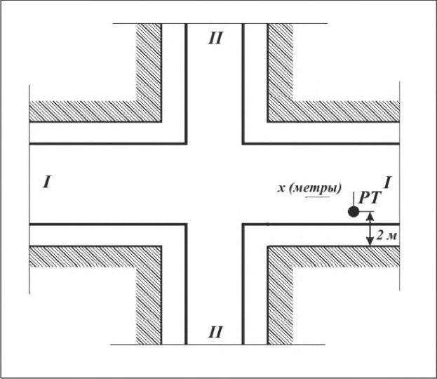
.
РТ - расчетная точка; x - расстояние от расчетной точки до оси ближайшей полосы движения по пересекающей улице (дороге)
Рисунок 6.1 - Схема для определения коррекции, учитывающей наличие нерегулируемого пересечения
- для потока легковых автомобилей авт макс.50 А L = 74 дБ А ;
- при наличии в потоке грузовых автомобилей и/или автобусов авт макс.50 А L = 80 дБ А .
где авт макс.50 А L - максимальный уровень звука по 6.2.14, соответствующий скорости движения 50 км/ч, дБ А .
Полученный при расчете максимальный уровень звука 𝐿𝐴макс𝑣 авт , соответствующий скорости v , км/ч, следует округлять с точностью до 0,5 дБ А .
где N - прогнозируемая интенсивность движения автомобильного транспортного потока, ед./ч; v -прогнозируемая средняя скорость движения автомобильного транспортного потока, км/ч; p -прогнозируемая доля грузовых автомобилей и общественных транспортных средств в потоке, %.
Для повышения точности прогнозирования расчетной шумовой характеристики по формуле (7) в нее следует внести согласно таблицам 6.2-6.7 коррекции на известные на момент расчетов параметры.
СП 276 .1325800.2016
субъективную реакцию населения на шум. Поэтому в таких случаях следует проводить оценку шумовой характеристики данного нерегулярного движения автомобильного транспорта только по максимальному уровню звука авт макс А L , дБ А . Расчетный максимальный уровень звука авт макс А L , дБ А , в случае эпизодических проездов отдельных автомобилей следует принимать по 6.2.14-6.2.15 в зависимости от скорости их движения.
Таблица 6.8 - Относительные спектры шума автомобильного транспортного потока
| Источник шума | Относительная частотная характеристика шума автомобильного транспортного потока ∆ авт отн , дБ, в октавных полосах со среднегеометрическими частотами, Гц | Относительная частотная характеристика шума автомобильного транспортного потока ∆ авт отн , дБ, в октавных полосах со среднегеометрическими частотами, Гц | Относительная частотная характеристика шума автомобильного транспортного потока ∆ авт отн , дБ, в октавных полосах со среднегеометрическими частотами, Гц | Относительная частотная характеристика шума автомобильного транспортного потока ∆ авт отн , дБ, в октавных полосах со среднегеометрическими частотами, Гц | Относительная частотная характеристика шума автомобильного транспортного потока ∆ авт отн , дБ, в октавных полосах со среднегеометрическими частотами, Гц | Относительная частотная характеристика шума автомобильного транспортного потока ∆ авт отн , дБ, в октавных полосах со среднегеометрическими частотами, Гц | Относительная частотная характеристика шума автомобильного транспортного потока ∆ авт отн , дБ, в октавных полосах со среднегеометрическими частотами, Гц | Относительная частотная характеристика шума автомобильного транспортного потока ∆ авт отн , дБ, в октавных полосах со среднегеометрическими частотами, Гц |
|---|---|---|---|---|---|---|---|---|
| 63 | 125 | 250 | 500 | 1000 | 2000 | 4000 | 8000 | |
| Потоки грузовых автомобилей и средств обществен- ного транспорта | +8,4 | +2,0 | -1,0 | -3,8 | -3,7 | -7,4 | -12,3 | -20,3 |
Примечание ─ Согласно МУК 4.3.2194-07 оценку уровня звукового давления в октавной полосе со среднегеометрической частотой 31,5 Гц не проводят
6.3Потоки троллейбусов
Шумовыми характеристиками потока троллейбусов являются эквивалентный трол экв А L , дБ А , и максимальный трол макс А L , дБ А , уровни звука на опорном расстоянии 7,5 м от оси ближайшей к расчетной точке полосы движения троллейбусов и на высоте 1,5 м над уровнем проезжей части.
Для повышения точности расчетов целесообразно провести в соответствии с ГОСТ 20444 измерения внешнего шума троллейбусов, эксплуатируемых в конкретном населенном пункте. При невозможности таких измерений следует использовать ориентировочные значения по таблице 6.9.
Таблица 6.9 - Шумовая характеристика (эквивалентный уровень звука) потока троллейбусов
| Модель троллейбуса | Эквивалентный уровень звука трол экв А L , дБ А , потока троллейбусов при интенсивности движения в обоих направлениях N , трол./ч | Эквивалентный уровень звука трол экв А L , дБ А , потока троллейбусов при интенсивности движения в обоих направлениях N , трол./ч | Эквивалентный уровень звука трол экв А L , дБ А , потока троллейбусов при интенсивности движения в обоих направлениях N , трол./ч | Эквивалентный уровень звука трол экв А L , дБ А , потока троллейбусов при интенсивности движения в обоих направлениях N , трол./ч | Эквивалентный уровень звука трол экв А L , дБ А , потока троллейбусов при интенсивности движения в обоих направлениях N , трол./ч | Эквивалентный уровень звука трол экв А L , дБ А , потока троллейбусов при интенсивности движения в обоих направлениях N , трол./ч | Эквивалентный уровень звука трол экв А L , дБ А , потока троллейбусов при интенсивности движения в обоих направлениях N , трол./ч |
|---|---|---|---|---|---|---|---|
| Модель троллейбуса | До 15 включ. | 20 | 25 | 30 | 40 | 50 | 60 и выше |
| ЗиУ-683 | 57 | 58 | 59 | 60 | 61 | 62 | 63 |
| ЗиУ-682ГОО, ЗиУ-682ГО12 | 59 | 60 | 61 | 62 | 63 | 64 | 65 |
СП 276
.1325800.2016
СП 276 .1325800.2016
Таблица 6.10 - Коррекция ∆трол, добавляемая к эквивалентному уровню звука потока троллейбусов и учитывающая число полос движения транспорта
| Число полос движения по проезжей части в обоих направлениях | 2 | 4 | 6 | 8-10 |
|---|---|---|---|---|
| Коррекция ∆ трол , дБ А | 3 | 2 | 1,5 | 1 |
Таблица 6.11 - Шумовая характеристика (максимальный уровень звука) потока троллейбусов
| Модель троллейбуса | Максимальный уровень звука трол макс А L , дБ А , потока троллейбусов при скорости движения v трол , км/ч | Максимальный уровень звука трол макс А L , дБ А , потока троллейбусов при скорости движения v трол , км/ч | Максимальный уровень звука трол макс А L , дБ А , потока троллейбусов при скорости движения v трол , км/ч | Максимальный уровень звука трол макс А L , дБ А , потока троллейбусов при скорости движения v трол , км/ч |
|---|---|---|---|---|
| Модель троллейбуса | 40 | 50 | 60 | 70 |
| ЗиУ-683 | 70 | 72 | 74 | 77 |
| ЗиУ-682ГОО, ЗиУ-682ГО12 | 72 | 74 | 77 | 79 |
| Примечание - При скорости движения троллейбуса, отличной от табличного значения, проводят интерполирование на основе ближайших табличных значений максимального уровня звука. | Примечание - При скорости движения троллейбуса, отличной от табличного значения, проводят интерполирование на основе ближайших табличных значений максимального уровня звука. | Примечание - При скорости движения троллейбуса, отличной от табличного значения, проводят интерполирование на основе ближайших табличных значений максимального уровня звука. | Примечание - При скорости движения троллейбуса, отличной от табличного значения, проводят интерполирование на основе ближайших табличных значений максимального уровня звука. | Примечание - При скорости движения троллейбуса, отличной от табличного значения, проводят интерполирование на основе ближайших табличных значений максимального уровня звука. |
Таблица 6.12 - Относительные спектры шума потока троллейбусов
| Источник шума | Относительная частотная характеристика шума потока троллейбусов ∆ трол отн , дБ, в октавных полосах со среднегеометрическими частотами, Гц | Относительная частотная характеристика шума потока троллейбусов ∆ трол отн , дБ, в октавных полосах со среднегеометрическими частотами, Гц | Относительная частотная характеристика шума потока троллейбусов ∆ трол отн , дБ, в октавных полосах со среднегеометрическими частотами, Гц | Относительная частотная характеристика шума потока троллейбусов ∆ трол отн , дБ, в октавных полосах со среднегеометрическими частотами, Гц | Относительная частотная характеристика шума потока троллейбусов ∆ трол отн , дБ, в октавных полосах со среднегеометрическими частотами, Гц | Относительная частотная характеристика шума потока троллейбусов ∆ трол отн , дБ, в октавных полосах со среднегеометрическими частотами, Гц | Относительная частотная характеристика шума потока троллейбусов ∆ трол отн , дБ, в октавных полосах со среднегеометрическими частотами, Гц | Относительная частотная характеристика шума потока троллейбусов ∆ трол отн , дБ, в октавных полосах со среднегеометрическими частотами, Гц |
|---|---|---|---|---|---|---|---|---|
| 63 | 125 | 250 | 500 | 1000 | 2000 | 4000 | 8000 | |
| Потоки троллейбусов | +8,4 | +2,0 | -1,0 | -3,8 | -3,7 | -7,4 | -12,3 | -20,3 |
Примечание ─ Согласно МУК 4.3.2194 оценку уровня звукового давления в октавной полосе со среднегеометрической частотой 31,5 Гц не проводят.
6.4Потоки трамваев
Таблица 6.13 - Шумовые характеристики потока трамваев
| Расчетный эквивалентный уровень звука трам экв А L , дБ А , потока трамваев при интенсивности движения N трам , ед./ч | Расчетный эквивалентный уровень звука трам экв А L , дБ А , потока трамваев при интенсивности движения N трам , ед./ч | Расчетный эквивалентный уровень звука трам экв А L , дБ А , потока трамваев при интенсивности движения N трам , ед./ч | Расчетный эквивалентный уровень звука трам экв А L , дБ А , потока трамваев при интенсивности движения N трам , ед./ч | Расчетный эквивалентный уровень звука трам экв А L , дБ А , потока трамваев при интенсивности движения N трам , ед./ч | Расчетный эквивалентный уровень звука трам экв А L , дБ А , потока трамваев при интенсивности движения N трам , ед./ч | Расчетный эквивалентный уровень звука трам экв А L , дБ А , потока трамваев при интенсивности движения N трам , ед./ч | Расчетный эквивалентный уровень звука трам экв А L , дБ А , потока трамваев при интенсивности движения N трам , ед./ч | Расчетный эквивалентный уровень звука трам экв А L , дБ А , потока трамваев при интенсивности движения N трам , ед./ч | Расчетный эквивалентный уровень звука трам экв А L , дБ А , потока трамваев при интенсивности движения N трам , ед./ч | Расчетный эквивалентный уровень звука трам экв А L , дБ А , потока трамваев при интенсивности движения N трам , ед./ч | Расчетный эквивалентный уровень звука трам экв А L , дБ А , потока трамваев при интенсивности движения N трам , ед./ч | Расчет- ный макси- | |
|---|---|---|---|---|---|---|---|---|---|---|---|---|---|
| Тип верхнего строения пути | 4 | 5 | 6 | 8 | 10 | 12 | 15 | 20 | 25 | 30 | 40 | 50 | мальный уровень звука трам макс А L , дБ А |
| Шпально- песчаное | 60 | 61 | 62 | 63 | 64 | 65 | 66 | 67 | 68 | 69 | 70 | 71 | 82 |
| Шпально- щебеночное на монолитной бетонной плите | 61 | 62 | 63 | 64 | 65 | 66 | 67 | 68 | 69 | 70 | 71 | 72 | 83 |
| Шпально- щебеночное | 64 | 65 | 66 | 67 | 68 | 69 | 70 | 71 | 72 | 73 | 74 | 75 | 86 |
| Монолитно- бетонное | 70 | 71 | 72 | 73 | 74 | 75 | 76 | 77 | 78 | 79 | 80 | 81 | 92 |
Примечание - При интенсивности движения трамваев, отличной от указанной в настоящей таблице, следует принимать значения, рассчитываемые методом интерполяции табличных данных.
Таблица 6.14 - Относительные спектры шума потока трамваев
| Источник шума | Относительная частотная характеристика шума потока трамваев ∆ трам отн , дБ, в октавных полосах со среднегеометрическими частотами, Гц | Относительная частотная характеристика шума потока трамваев ∆ трам отн , дБ, в октавных полосах со среднегеометрическими частотами, Гц | Относительная частотная характеристика шума потока трамваев ∆ трам отн , дБ, в октавных полосах со среднегеометрическими частотами, Гц | Относительная частотная характеристика шума потока трамваев ∆ трам отн , дБ, в октавных полосах со среднегеометрическими частотами, Гц | Относительная частотная характеристика шума потока трамваев ∆ трам отн , дБ, в октавных полосах со среднегеометрическими частотами, Гц | Относительная частотная характеристика шума потока трамваев ∆ трам отн , дБ, в октавных полосах со среднегеометрическими частотами, Гц | Относительная частотная характеристика шума потока трамваев ∆ трам отн , дБ, в октавных полосах со среднегеометрическими частотами, Гц | Относительная частотная характеристика шума потока трамваев ∆ трам отн , дБ, в октавных полосах со среднегеометрическими частотами, Гц |
|---|---|---|---|---|---|---|---|---|
| 63 | 125 | 250 | 500 | 1000 | 2000 | 4000 | 8000 | |
| Потоки трамваев | -12,6 | -15,5 | -18,4 | -5,6 | -3,7 | -6,4 | -11,5 | -23,4 |
Примечание ─ Согласно МУК 4.3.2194 оценку уровня звукового давления в октавной полосе со среднегеометрической частотой 31,5 Гц не проводят.
6.5Потоки железнодорожных поездов
- шумовые характеристики, определенные за время оценки T = 1 ч;
- шумовые характеристики, определенные за время оценки T , отличное от 1 ч.
где k l n - число поездов k -й категории, проходящих по рассматриваемому участку пути, в течение l -го часа; t il - время следования каждого поезда по рассматриваемому участку пути в течение l -го часа, с.
Примечание - При отсутствии фактической почасовой нагрузки используется усредненная нагрузка по данному участку для дневного и ночного периодов суток; жел. экв.25, k A il L - эквивалентный уровень звука, дБ А , создаваемый на расстоянии 25 м от оси ближнего магистрального железнодорожного пути i -м поездом k -й категории, проходящим в течение l -го часа.
где k - категория поезда: k = 1- пассажирский поезд; k = 2 - грузовой поезд; k = 3 - пригородный электропоезд; k = 4 - высокоскоростной поезд (скорость движения не более 250 км/ч); t k,i - время проезда i -го поезда k -й категории мимо расчетной точки, с; жел экв. , А k i L - эквивалентный уровень звука, создаваемый i -м поездом k -й категории за время его проезда t k,i мимо расчетной точки, дБ А , и определяемый по 6.5.7; n k - число поездов k -й категории, проехавших мимо расчетной точки за время оценки T .
где жел. экв. , А k T L - то же, что и в формуле (13), дБ А.
- для пассажирских поездов ( k =1)
- для грузовых поездов ( k = 2)
- для пригородных электропоездов ( k = 3)
- для высокоскоростных поездов ( k = 4)
где vk - скорость движения поездов k -й категории, км/ч; l k - длина поезда k -й категории, м;
При отсутствии конкретных данных допускается принимать следующие расчетные длины поездов:
- для пассажирских поездов l 1 = 500 м;
- для грузовых поездов l 2 = 1200 м;
- для пригородных электропоездов l 3 = 200 м;
- для высокоскоростных поездов l 4 = 250 м;
Таблица 6.15 - Коррекция на тип железнодорожного пути
| Тип железнодорожного пути | Коррекция ∆ жел тип L , дБ А |
|---|---|
| Путь с бетонными шпалами | 0 |
| Путь с деревянными шпалами | -2 |
| Путь на бетонных плитах | +3 |
Таблица 6.16 - Коррекция на наличие криволинейных участков железнодорожного пути
| Радиус криволинейного участка, м | До 300 | 300-500 | Свыше 500 |
|---|---|---|---|
| Коррекция ∆ жел , кр дБ L А | 8 | 3 | 0 |
Таблица 6.17 - Коррекция на тип моста
| Тип моста | Коррекция ∆ жел мост L , дБ А |
|---|---|
| Стальной мост | 10 |
| Стальной мост с балластным слоем | 5 |
| Стальной мост с балластным слоем и подбалластным матом | 3 |
| Армированный бетонный мост с балластным слоем и подбалластным матом | 0 |
| Армированный бетонный мост с бетонными опорами | 0 |
- для пассажирских поездов ( k = 1)
- для грузовых поездов ( k = 2)
- для пригородных электропоездов ( k = 3)
- для высокоскоростных поездов ( k = 4)
где vk - то же, что и в формулах (15)-(18).
где жел. , макс.25 k i A L - средний максимальный уровень звука, рассчитанный по формуле
здесь дн/н i n - число проходов поездов i -го типа за дневной или ночной период оценки; жел.дн/н, макс i A j L - максимальный уровень звука А по формулам (19)-(22) при проходе j -го поезда i -й категории за дневной (дн.) или ночной (н) период оценки, дБА.
Таблица 6.18 - Относительные спектры шума потоков железнодорожных поездов
| Источник шума | Относительная частотная характеристика шума потоков железнодорожных поездов ∆ жел отн , дБ, в октавных полосах со среднегеометрическими частотами, Гц | Относительная частотная характеристика шума потоков железнодорожных поездов ∆ жел отн , дБ, в октавных полосах со среднегеометрическими частотами, Гц | Относительная частотная характеристика шума потоков железнодорожных поездов ∆ жел отн , дБ, в октавных полосах со среднегеометрическими частотами, Гц | Относительная частотная характеристика шума потоков железнодорожных поездов ∆ жел отн , дБ, в октавных полосах со среднегеометрическими частотами, Гц | Относительная частотная характеристика шума потоков железнодорожных поездов ∆ жел отн , дБ, в октавных полосах со среднегеометрическими частотами, Гц | Относительная частотная характеристика шума потоков железнодорожных поездов ∆ жел отн , дБ, в октавных полосах со среднегеометрическими частотами, Гц | Относительная частотная характеристика шума потоков железнодорожных поездов ∆ жел отн , дБ, в октавных полосах со среднегеометрическими частотами, Гц | Относительная частотная характеристика шума потоков железнодорожных поездов ∆ жел отн , дБ, в октавных полосах со среднегеометрическими частотами, Гц |
|---|---|---|---|---|---|---|---|---|
| 63 | 125 | 250 | 500 | 1000 | 2000 | 4000 | 8000 | |
| Пассажирский |
СП 276 .1325800.2016
| поезд с локомотивной тягой | -12,6 | -15,5 | -18,4 | -5,6 | -3,7 | -6,4 | -11,5 | -23,4 |
|---|---|---|---|---|---|---|---|---|
| Грузовой поезд | +2,8 | -5,8 | -6,0 | -2,5 | -5,2 | -7,0 | -12,1 | -21,8 |
| Пригородный электропоезд | -15,1 | -17,0 | -17,3 | -4,3 | -3,3 | -6,2 | -13,5 | -24,2 |
| Высокоскоростной поезд ( v < 250 км/ч) | +1,0 | -4,5 | -13,9 | -7,2 | -4,6 | -5,1 | -10,8 | -19,4 |
Примечание - Согласно МУК 4.3.2194 оценку уровня звукового давления в октавной полосе со среднегеометрической частотой 31,5 Гц не проводят.
6.6Потоки метропоездов на открытых линиях метрополитена
Однако не всегда удается определить шумовые характеристики метропоездов на расстоянии R 0 = 25 м, так как граница технической зоны линии метрополитена, доступ за которую запрещен, обычно находится на расстоянии, отличном от 25 м. Поэтому в формуле (27) сохранено общее обозначение R 0, но в эту формулу следует подставлять фактическое значение R 0 .
где N - число метропоездов за 1 ч, пар/ч; v - скорость движения потока метропоездов, км/ч; l - длина метропоезда, м ( l = 25 м);
R 0 - опорное расстояние, м.
Примечание - Стандартное расстояние R 0 = 25 м.
Таблица 6.19 - Относительные спектры шума потоков метропоездов
| Источник шума | Относительная частотная характеристика шума потоков метропоездов ∆ метро отн , дБ, в октавных полосах со среднегеометрическими частотами, Гц | Относительная частотная характеристика шума потоков метропоездов ∆ метро отн , дБ, в октавных полосах со среднегеометрическими частотами, Гц | Относительная частотная характеристика шума потоков метропоездов ∆ метро отн , дБ, в октавных полосах со среднегеометрическими частотами, Гц | Относительная частотная характеристика шума потоков метропоездов ∆ метро отн , дБ, в октавных полосах со среднегеометрическими частотами, Гц | Относительная частотная характеристика шума потоков метропоездов ∆ метро отн , дБ, в октавных полосах со среднегеометрическими частотами, Гц | Относительная частотная характеристика шума потоков метропоездов ∆ метро отн , дБ, в октавных полосах со среднегеометрическими частотами, Гц | Относительная частотная характеристика шума потоков метропоездов ∆ метро отн , дБ, в октавных полосах со среднегеометрическими частотами, Гц | Относительная частотная характеристика шума потоков метропоездов ∆ метро отн , дБ, в октавных полосах со среднегеометрическими частотами, Гц |
|---|---|---|---|---|---|---|---|---|
| 63 | 125 | 250 | 500 | 1000 | 2000 | 4000 | 8000 | |
| Метропоезд | -14,3 | -14,7 | -17,5 | -4,2 | -3,5 | -6,2 | -12,4 | -23,4 |
Примечание - Согласно МУК 4.3.2194 оценку уровня звукового давления в октавной полосе со среднегеометрической частотой 31,5 Гц не проводят.
6.7Потоки водных судов
Дополнительной шумовой характеристикой водных судов являются эквивалентные уровни звукового давления в октавных полосах со среднегеометрическими частотами от 63 до 8000 Гц.
СП 276 .1325800.2016
Шумовые характеристики водных судов следует определять или с помощью измерений по ГОСТ 31329 при наличии такой возможности, или расчетным путем.
Таблица 6.20 - Шумовые характеристики потоков однотипных водных судов
| Тип судна | Расчетный эквивалентный уровень звука суд экв А L , дБ А , потоков однотипных судов при интенсивности движения N , судов/ч | Расчетный эквивалентный уровень звука суд экв А L , дБ А , потоков однотипных судов при интенсивности движения N , судов/ч | Расчетный эквивалентный уровень звука суд экв А L , дБ А , потоков однотипных судов при интенсивности движения N , судов/ч | Расчетный эквивалентный уровень звука суд экв А L , дБ А , потоков однотипных судов при интенсивности движения N , судов/ч | Расчетный эквивалентный уровень звука суд экв А L , дБ А , потоков однотипных судов при интенсивности движения N , судов/ч | Расчетный эквивалентный уровень звука суд экв А L , дБ А , потоков однотипных судов при интенсивности движения N , судов/ч | Расчетный эквивалентный уровень звука суд экв А L , дБ А , потоков однотипных судов при интенсивности движения N , судов/ч | Расчетный эквивалентный уровень звука суд экв А L , дБ А , потоков однотипных судов при интенсивности движения N , судов/ч | Расчетный эквивалентный уровень звука суд экв А L , дБ А , потоков однотипных судов при интенсивности движения N , судов/ч | Расчетный эквивалентный уровень звука суд экв А L , дБ А , потоков однотипных судов при интенсивности движения N , судов/ч | Расчетный эквивалентный уровень звука суд экв А L , дБ А , потоков однотипных судов при интенсивности движения N , судов/ч | Расчетный эквивалентный уровень звука суд экв А L , дБ А , потоков однотипных судов при интенсивности движения N , судов/ч | Расчетный максимальный уровень звука суд макс А L , дБ А |
|---|---|---|---|---|---|---|---|---|---|---|---|---|---|
| Тип судна | 2 | 3 | 4 | 5 | 6 | 8 | 10 | 12 | 15 | 20 | 25 | 30 | Расчетный максимальный уровень звука суд макс А L , дБ А |
| Пассажирские крупнотоннажные: | |||||||||||||
| 4-палубные | 53 | 55 | 56 | 57 | 58 | 59 | 60 | 61 | 62 | 63 | 64 | 65 | 75 |
| 2-3-палубные | 48 | 50 | 51 | 52 | 53 | 54 | 55 | 56 | 57 | 58 | 59 | 60 | 70 |
| Пассажирские суда на внутригородских, пригородных, местных линиях | |||||||||||||
| 52 | 54 | 55 | 56 | 57 | 58 | 59 | 60 | 61 | 62 | 63 | 64 | 73 | |
| Глиссирующие типа «Заря» | 58 | 60 | 61 | 62 | 63 | 64 | 65 | 66 | 67 | 68 | 69 | 70 | 82 |
| На воздушной подушке типа «Зарница», «Луч» | 52 | 54 | 55 | 56 | 57 | 58 | 59 | 60 | 61 | 62 | 63 | 64 | 76 |
| На подводных крыльях типа «Ракета», «Восход» | 54 | 56 | 57 | 58 | 59 | 60 | 61 | 62 | 63 | 64 | 65 | 66 | 80 |
| Суда типа «Метеор», «Комета» | 60 | 62 | 63 | 64 | 65 | 66 | 67 | 68 | 69 | 70 | 71 | 72 | 85 |
| Грузовые суда | 52 | 54 | 55 | 56 | 57 | 58 | 59 | 60 | 61 | 62 | 63 | 64 | 72 |
| Буксиры и толкачи | 57 | 59 | 60 | 61 | 62 | 63 | 64 | 65 | 66 | 67 | 68 | 69 | 75 |
|---|---|---|---|---|---|---|---|---|---|---|---|---|---|
| Катера и моторные лодки | 54 | 56 | 57 | 58 | 59 | 60 | 61 | 62 | 63 | 64 | 65 | 66 | 77 |
| Земснаряды черпаковые | 85 | 87 | - | - | - | - | - | - | - | - | - | - | 82 |
| Земснаряды землесосные | 76 | 78 | - | - | - | - | - | - | - | - | - | - | 73 |
Примечание - При интенсивности движения судов, отличной от указанной в настоящей таблице, следует принимать значения, рассчитываемые методом интерполяции табличных данных.
Таблица 6.21 - Относительные спектры шума потоков водных судов
| Относительная частотная характеристика шума водных судов | Относительная частотная характеристика шума водных судов | Относительная частотная характеристика шума водных судов | Относительная частотная характеристика шума водных судов | Относительная частотная характеристика шума водных судов | Относительная частотная характеристика шума водных судов | Относительная частотная характеристика шума водных судов | Относительная частотная характеристика шума водных судов | |
|---|---|---|---|---|---|---|---|---|
| Источник шума | ∆ суд отн , дБ, в октавных полосах со среднегеометрическими частотами, Гц | ∆ суд отн , дБ, в октавных полосах со среднегеометрическими частотами, Гц | ∆ суд отн , дБ, в октавных полосах со среднегеометрическими частотами, Гц | ∆ суд отн , дБ, в октавных полосах со среднегеометрическими частотами, Гц | ∆ суд отн , дБ, в октавных полосах со среднегеометрическими частотами, Гц | ∆ суд отн , дБ, в октавных полосах со среднегеометрическими частотами, Гц | ∆ суд отн , дБ, в октавных полосах со среднегеометрическими частотами, Гц | ∆ суд отн , дБ, в октавных полосах со среднегеометрическими частотами, Гц |
| 63 | 125 | 250 | 500 | 1000 | 2000 | 4000 | 8000 | |
| Пассажирские скоростные суда | -12 | -9 | -6 | -6 | -2 | -11 | -22 | -34 |
| Пассажирские пригородные и прогулочные суда | -10 | -8 | -7 | -10 | -4 | -5 | -14 | -23 |
Примечание - Согласно МУК 4.3.2194 оценку уровня звукового давления в октавной полосе со среднегеометрической частотой 31,5 Гц не проводят.
7 Методы расчета ожидаемых уровней шума на территории жилых, общественно-деловых и рекреационных зон и в помещениях жилых и общественных зданий, прилегающих к транспортным магистралям
7.1 Общие положения
Ожидаемые уровни шума на территории жилых, общественно-деловых и рекреационных зон и в помещениях жилых и общественных зданий, прилегающих к транспортным магистралям и подвергающихся воздействию шума транспортных потоков, определяют с помощью акустических расчетов, методика выполнения которых приведена в 7.2-7.12.
На основании сравнения расчетных ожидаемых уровней шума с допустимыми уровнями шума по СН 2.2.4/2.1.8.562 и СП 51.13330 проводят оценку акустического качества окружающей среды вокруг транспортных магистралей и в необходимых случаях разрабатывают мероприятия по обеспечению выполнения требований санитарных норм как в дневной, так и в ночной период суток.
СП 276
.1325800.2016
Акустические расчеты проводят с точностью до десятых долей децибела, а окончательные результаты округляют до целых децибелов.
7.2 Общий порядок расчета и выбор расчетных точек
7.2.1 Для проведения акустических расчетов прежде всего необходимо иметь планировочную подоснову (ситуационный план в масштабе) защищаемых от шума участков жилой, общественно-деловой или рекреационной зоны с указанием расположения на них всех транспортных магистралей, жилых и общественных зданий.
7.2.2 На планировочной подоснове должны быть выделены функциональные зоны и защищаемые от шума объекты, для которых прежде всего следует определить согласно их назначению допустимые уровни шума по СН 2.2.4/2.1.8.562 и СП 51.13330 или в соответствии с данными таблицы 5.1.
7.2.3 Для оценки ожидаемого шумового режима на рассматриваемых участках жилых, общественно-деловых и рекреационных зон и в помещениях расположенных на них жилых и общественных зданий необходимо выбрать расчетные точки в наиболее характерных местах рассматриваемых участков, а также в необходимых случаях и в помещениях жилых и общественных зданий. При выборе расчетных точек следует руководствоваться указаниями ГОСТ 23337.
7.2.4 В частности, при расчете уровней шума на площадках детских дошкольных организаций, участках школ, площадках отдыха микрорайонов, кварталов и групп жилых домов, на территориях больниц и санаториев расчетные точки следует выбирать на ближайшей к улице (дороге) границе площадок на высоте 1,5 м над уровнем их территории.
7.2.5 При произвольном расположении расчетной точки на территории ее высота также принимается равной 1,5 м над уровнем территории.
46 7.2.6 Расчетные точки на территориях, непосредственно прилегающих к многоэтажным жилым и общественным зданиям, выбирают на расстоянии 2 м от уличных фасадов зданий на уровне середины окон первого и последнего этажей зданий. Если расстояние от улицы (дороги) до здания составляет свыше 100 м, то можно ограничиться только одной расчетной точкой на уровне середины окон верхнего этажа.
Для малоэтажной застройки (не выше трех этажей) при любом расстоянии от улицы (дороги) достаточно выбрать одну расчетную точку на уровне середины окна верхнего этажа и на расстоянии 2 м от него.
7.2.7 Если защищаемая от шума территория или защищаемое от шума здание частично находится в зоне акустической тени, а частично в зоне попадания прямых звуковых лучей, то расчетные точки следует выбирать вне зоны акустической тени.
Однако если требуется оценить акустическую эффективность шумозащитного сооружения (экрана), отдельные расчетные точки следует выбирать также внутри зоны акустической тени за шумозащитным сооружением (экраном). Примеры выбора расчетных точек приведены на рисунке 7.1.
Расстояния в метрах
Рисунок 7.1 - Примеры расположения расчетных точек около зданий
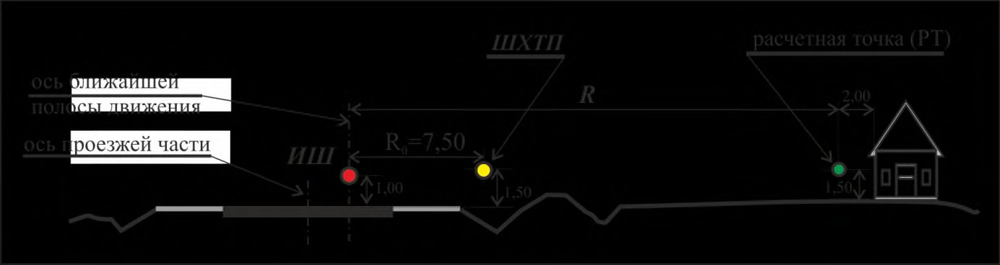
7.2.8 Через выбранные расчетные точки проводят условно плоскости, перпендикулярные продольной оси транспортной улицы (дороги), и получают таким образом расчетные сечения, по которым определяют основные параметры, влияющие на распространение шума от транспортного потока к защищаемому от шума объекту (рисунок 7.2).
Расстояния в метрах
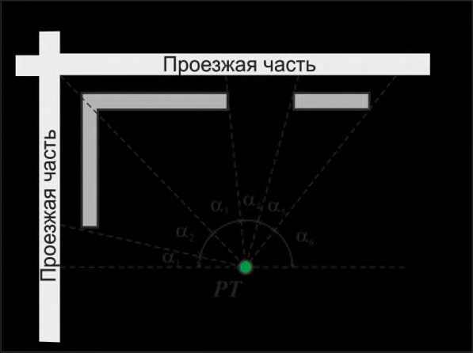
ИШ - источник шума (акустический центр транспортного потока); ШХТП шумовая характеристика транспортного потока; РТ - расчетная точка;
R - расстояние от акустического центра транспортного потока до расчетной точки;
R 0 - расстояние от акустического центра транспортного потока до опорной точки R 0 = 7,5 м (поток автомобилей) или R 0 = 25 м (поток железнодорожных или метропоездов)
Рисунок 7.2 - Схема расположения расчетной точки в расчетном сечении участка территории
7.2.9 Дальнейшие действия сводятся к следующему:
- на основании анализа ситуационного плана рассматриваемого участка территории необходимо выявить транспортные магистрали, потоки транспортных средств на которых являются основными источниками внешнего шума, воздействующего на данную территорию и расположенные на ней жилые и общественные здания;
- необходимо условно разбить рассматриваемый участок территории на отдельные подучастки, отличающиеся по условиям генерации и распространения шума (рисунок 7.3), а именно:
- в случаях, если между транспортной магистралью и расчетной точкой расположены экранирующие объекты;
- улица (дорога) на рассматриваемом участке резко изменяет свое направление;
- шум в расчетную точку поступает от двух или большего числа улиц (дорог).
- 7.2.10 Разбивку участка территории на подучастки проводят следующим образом.
Из расчетной точки (РТ) на плане территории проводят лучи через края экранирующих объектов (например, существующих зданий), через точки пересечения (или резкого изменения направления) улиц (дорог) до пересечения с осями этих улиц (дорог). При этом получается ряд подучастков, для каждого из которых необходимо рассчитать шумовые характеристики относящихся к нему транспортных магистралей и определить угол αi , под которым этот подучасток виден из расчетной точки (рисунок 7.3).
Рисунок 7.3 - Примеры разбивки защищаемой территории на подучастки, отличающиеся по условиям распространения шума
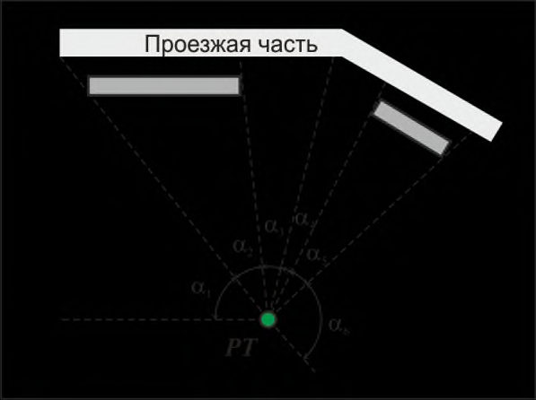
7.2.11 Если шум в расчетную точку попадает от нескольких подучастков, то для каждого подучастка выполняют свой самостоятельный акустический расчет. Полученные результаты затем энергетически суммируют в соответствии с приложением А и получают суммарный расчетный уровень звука в данной расчетной точке.
7.2.12 На основании сравнения расчетных (ожидаемых) уровней звука с допустимыми уровнями шума по СН 2.2.4/2.1.8.562 и СП 51.13330, определяют требуемое снижение уровней шума в расчетных точках и устанавливают требования к параметрам и конструкции проектируемых шумозащитных средств.
7.2.13 После назначения шумозащитных средств проводят проверочный расчет достаточности выбранных шумозащитных мероприятий.
7.3 Определение эквивалентных и максимальных уровней звука в расчетных точках
7.3.1 Уровни шума на территории жилых, общественно-деловых и рекреационных зон и в помещениях жилых и общественных зданий, обусловленные воздействием транспортных потоков, зависят от многих факторов, основными из которых являются:
- шумовая характеристика транспортного потока;
- расстояние от транспортной магистрали до расчетной точки;
- снижение уровня звука вследствие расширения фронта звуковой волны (дивергенция);
- снижение уровня звука вследствие его затухания в воздухе;
- снижение уровня звука вследствие влияния ветра и турбулентности воздуха;
- снижение уровня звука вследствие его поглощения поверхностью территории;
- снижение уровня звука полосами зеленых насаждений;
СП 276
.1325800.2016
- снижение уровня звука экранирующими препятствиями (зданиями, насыпями, холмами, выемками, искусственными экранами и т. п.) на пути звуковых лучей от транспортной магистрали к расчетной точке;
- снижение уровня звука вследствие его частичного затухания в примагистральной застройке;
- снижение уровня звука вследствие ограничения угла видимости транспортной магистрали из расчетной точки;
- повышение уровня звука вследствие его отражения от ограждающих конструкций зданий.
7.3.2 Ожидаемый эквивалентный уровень звука LА экв р.т., дБ А (или октавный эквивалентный уровень звукового давления L окт. экв. р.т, дБ), в расчетной точке от каждого подучастка транспортной магистрали рассчитывают по формуле
где LА экв -шумовая характеристика -эквивалентный уровень шума транспортного потока на соответствующем подучастке магистрали, определяют по разделу 6, дБ А ;
Δ LА рас - коррекция, учитывающая снижение уровня транспортного потока в зависимости от расстояния между ним и расчетной точкой, рассчитывают по 7.4, дБ А ;
Δ LА воз - коррекция, учитывающая снижение уровня звука вследствие его затухания в воздухе, рассчитывают по 7.5, дБ А ;
Δ LА / т - коррекция, учитывающая влияние турбулентности атмосферы и ветра на процесс распространения звука, рассчитывают по 7.6, дБ А ;
Δ LА пок - коррекция, учитывающая снижение уровня звука вследствие его поглощения поверхностью территории, рассчитывают по 7.7, дБ А ;
Δ LА зел - коррекция, учитывающая снижение уровня звука полосами зеленых насаждений, рассчитывают по 7.8, дБ А ;
Δ LА экр - коррекция, учитывающая снижение уровня звука существующими экранирующими сооружениями и препятствиями (зданиями, насыпями, холмами, выемками и т. п.) на пути звуковых лучей от транспортной магистрали к расчетной точке, рассчитывают по 7.9, дБ А ;
Δ LAα -коррекция, учитывающая снижение уровня звука вследствие ограничения угла видимости улицы (дороги) из расчетной точки, рассчитывают по 7.10, дБ А ;
Δ LА застр -коррекция, учитывающая характер придорожной застройки рассчитывают по 7.11, дБ А ;
Δ LА отр -коррекция, учитывающая отражение звука от ограждающих конструкций зданий, вблизи которых расположена расчетная точка, определяют по 7.12, дБ А (обычно принимают без расчета равной + 3 дБ А ).
7.3.3 Ожидаемый максимальный уровень звука LА макс. р.т , дБ А , в расчетной точке от каждого подучастка рассчитывают по формуле
где LА макс - шумовая характеристика (в виде максимального уровня звука) транспортного потока на магистрали, проходящей по соответствующему подучастку, дБ А , следует определять по разделу 6.
Остальные величины . в формуле (32) те же, что и формуле (31).
7.3.4 Распространение и снижение шума на местности допускается также рассчитывать в соответствии с ГОСТ 31295.2.
7.4 Снижение уровней шума с расстоянием
7.4.1 При расчетах снижения уровней шума с расстоянием акустический центр автотранспортного потока или потока рельсового транспорта принимается расположенным по оси ближайшей к расчетной точке полосы (пути) движения транспорта и на высоте 1 м над уровнем проезжей части магистрали (над головкой рельса для рельсовых видов транспорта). При расчетах снижения шума от водных судов акустический центр принимают расположенным в плоскости ближайшего к расчетной точке борта судна на высоте 2 м над поверхностью берега.
7.4.2 Коррекцию, учитывающую снижение эквивалентного уровня звука автотранспортного потока LА рас, дБ А , с расстоянием следует определять по формуле
где l - длина подлежащего расчету участка дороги, м;
R - расстояние от акустического центра транспортного потока до расчетной точки, определяемое по формуле
R
здесь S и.ш.-р.т - длина проекции на общую горизонтальную плоскость расстояния между акустическим центром транспортного потока и расчетной точкой, м; h и.ш - высота акустического центра транспортного потока над уровнем проезжей части, м; h р.т - высота расчетной точки над уровнем территории, м;
R 0 - опорное расстояние, на котором определяют шумовую характеристику транспортного потока, м (в случае автотранспортного потока R 0 = 7,5 м; в случае потока рельсового или водного транспорта R 0 = 25 м).
При расчетах по формуле (33) допускается принимать l ≥ 5 R.
7.4.3 Для повышения точности расчета при многополосном движении автотранспорта и при отсутствии между полосами движения автотранспорта бульваров или пешеходных аллей вначале рассчитывают последовательно расстояния Ri , м, определяемые по формуле
R
где R - то же, что и в формуле (34), м; i
- номер полосы движения (всего m полос суммарно в обе стороны); b пол - ширина полосы движения, м.
При наличии между полосами движения автотранспорта бульваров или пешеходных аллей при определении расстояний Ri для полос, расположенных за бульваром (пешеходной аллеей), учитывают также и ширину бульвара (пешеходной аллеи).
Затем для каждого расстояния Ri определяют по формуле (33) уровень звука LА экв. рас Ri , дБ А , создаваемый движением автотранспорта по соответствующей i -й полосе. Полученные значения LА экв. рас Ri , дБ А , энергетически суммируют в соответствии с приложением А и находят LА экв. рас. сум .
7.4.4 Коррекцию, учитывающую снижение максимального уровня шума автотранспортного потока с расстоянием LА макс.рас, дБ А , следует рассчитывать по формуле
где l - длина рассматриваемого участка дороги, м;
R -расстояние от расчетной точки до акустического центра автотранспортного потока, м; d - среднее расстояние между автомобилями на полосе движения, м; N = l /( 2 d) (округляют до целого).
7.4.5 Коррекцию, учитывающую снижение эквивалентного уровня шума потока железнодорожных поездов с расстоянием, дБ А , следует определять согласно ГОСТ 33325 по формуле
где l - средняя длина поездов, проходящих по рассматриваемому участку, м (при отсутствии конкретных данных допускается принимать по 6.5.7);
R - расстояние от оси ближнего пути до расчетной точки, м.
Допустимо также применение расчетного метода по ГОСТ 31295.2.
7.4.6 Коррекцию, учитывающую снижение максимального уровня звука потока железнодорожных поездов с расстоянием, дБ А , следует рассчитывать согласно ГОСТ 33325 по формуле
где l и R - то же, что и в формуле (37).
- 7.4.7 Коррекцию, учитывающую снижение эквивалентного уровня звука потока трамваев с расстоянием, дБ А , следует определять по формуле
где l - средняя длина трамваев, проходящих по рассматриваемому участку, м,
R - расстояние от оси ближнего трамвайного пути до расчетной точки, м.
- 7.4.8 Коррекцию, учитывающую снижение максимального уровня звука потока трамваев с расстоянием, дБ А , следует рассчитывать по формуле
где l и R - то же, что и в формуле (37).
- 7.4.9 Коррекцию, учитывающую снижение эквивалентного уровня звука метропоездов с расстоянием, дБ А , следует рассчитывать по формуле
где l - средняя длина метропоездов, проходящих по рассматриваемому участку, м;
R - расстояние от оси ближнего пути до расчетной точки, м;
R 0 - опорное расстояние ( R 0 = 25 м).
- 7.4.10 Коррекцию, учитывающую снижение максимального уровня звука метропоездов с расстоянием, дБ А , следует рассчитывать по формуле
где l и R - то же, что и в формуле (41).
7.4.11 При ориентировочных расчетах на стадиях ТЭО и разработки генерального плана населенного пункта, когда параметры транспортных потоков еще неизвестны, допускается определять снижение шума транспортного потока LА рас по ориентировочной формуле
Δ
где R 0 = 7,5 м или R 0 = 25 м в зависимости от вида транспортного потока; l - длина рассматриваемого участка дороги ( l ≥ 5 R ) либо отдельного транспортного средства.
7.4.12 Расчет снижения уровней звука с расстоянием допускается также проводить по ГОСТ 31295.2, методика которого реализована в ряде российских и зарубежных программных средств.
7.5 Снижение уровней шума вследствие его затухания в воздухе и рассеяния на атмосферных неоднородностях
7.5.1 При распространении шума от транспортного источника происходит дополнительное снижение его уровней за счет вязкости и теплопроводности воздуха (классическое поглощение, обусловленное обменом импульсами между движущимися молекулами) и за счет перераспределения энергии между различными степенями свободы молекул (молекулярное поглощение). Эти виды поглощения звука зависят от частоты, температуры и влажности воздуха. В общем случае эта зависимость носит сложный характер, который не поддается описанию аналитической формулой и в наиболее детальном виде представлен набором таблиц в ГОСТ 31295.1
7.5.2 При выполнении акустических расчетов, связанных с санитарногигиенической оценкой зашумленности территории транспортными источниками, следует пользоваться эмпирической формулой для определения коррекции, учитывающей снижение уровня звука вследствие его затухания звука в воздухе, дБ А , [2]:
где α воз - коэффициент затухания звука в воздухе, дБ А /м;
R - расстояние от акустического центра транспортного потока до расчетной точки, м.
При расчетах уровней звука принимают α воз = 0,005 дБ А /м.
При расчетах уровней звукового давления в октавных полосах частот в формулу (44) вместо α воз подставляют α воз.окт, дБ/м, принимаемое по таблице 7.1.
При расстоянии R < 50 м затухание звука в воздухе не учитывают.
Таблица 7.1 - Затухание звука в воздухе по ГОСТ 31295.1
| Октавные полосы со среднегеометрически- ми частотами, Гц | 63 | 125 | 250 | 500 | 1000 | 2000 | 4000 | 8000 |
|---|---|---|---|---|---|---|---|---|
| Затухание звука α воз. окт , дБ/м | 0 | 0,0007 | 0,0015 | 0,003 | 0,006 | 0,012 | 0,024 | 0,048 |
7.6 Учет влияния турбулентности атмосферы и ветра
7.6.1 При проектировании защиты от транспортного шума следует учитывать, что на распространение шума транспортных потоков существенное влияние могут оказывать турбулентность атмосферы и ветер, из-за влияния которых на достаточно больших расстояниях проявляются эффекты, связанные с искривлением хода звуковых лучей.
7.6.2 При распространении звука в направлении ветра звуковые лучи искривляются по направлению к земле, что приводит к повышенным уровням шума даже на больших расстояниях от источника шума.
7.6.3 При распространении звука навстречу ветру (против ветра) звуковые лучи искривляются кверху. В силу этого, начиная с некоторого расстояния от источника, образуется зона акустической тени, или зона «молчания», которая отсутствовала бы при спокойной атмосфере.
7.6.4 Расчет влияния ветра и турбулентности атмосферы на распространение звуковых волн необходимо проводить с учетом влияния температуры атмосферы.
При неустойчивых состояниях погоды земная поверхность обычно имеет бόльшую температуру, чем окружающий воздух, и вследствие этого звуковые лучи отклоняются вверх, что приводит к образованию зоны акустической тени на некотором расстоянии от источника.
При устойчивых состояниях погоды часто наблюдается возрастание температуры воздуха с высотой. Это вызывает искривление звуковых лучей по направлению к земле, что создает благоприятные условия для распространения звука на большие расстояния.
7.6.5 Неустойчивые состояния погоды, приводящие к неустойчивой слоистости воздуха, обычно наблюдаются при солнечной погоде днем и в летний период года.
Устойчивые состояния погоды (устойчивая слоистость воздуха) наблюдаются чаще зимой вечером и ночью при ясной безветренной погоде.
7.6.6 Для ориентировочного учета влияния ветра, турбулентности атмосферы и температуры коррекцию к расчетным уровням звука, дБ, следует вычислять по формуле
где R - расстояние от акустического центра транспортного потока до расчетной точки, м;
R 0 - опорное расстояние (для автотранспортных потоков R 0 = 7,5 м; для потоков железнодорожных поездов и метропоездов R 0 = 25 м; для потоков водных судов R 0 = 25 м).
7.7 Снижение уровней шума вследствие поглощения и отражения звука поверхностью территории
- 7.7.1 Так как транспортный поток и точка наблюдения (расчетная точка) находятся обычно на небольшой высоте над поверхностью территории, то звук распространяется, в основном, в приземном слое.
- 7.7.2 В случае акустически мягкой поверхности (покрытие территории травой или снегом или при наличии рыхлого грунта) и при отсутствии экрана следует дополнительно учитывать поглощение звука поверхностью территории ∆LА пок, дБ А , с помощью следующих ориентировочных формул:
где d - расстояние по перпендикуляру от расчетной точки до акустического центра транспортного потока, м (рисунок 7.4); h и.ш и h р.т - высоты акустического центра транспортного потока и расчетной точки над уровнем территории, м; σ - вспомогательная величина.
Если при расчете по формуле (47) σ оказывается меньше единицы, то принимают пок 0 А L = .
- 7.7.3 В случае акустически жесткой поверхности (асфальт, бетон, плотный грунт, вода) пок А L во всех случаях равна нулю.
Рисунок 7.4 - Схема для определения расчетных расстояний S 2 и d 2
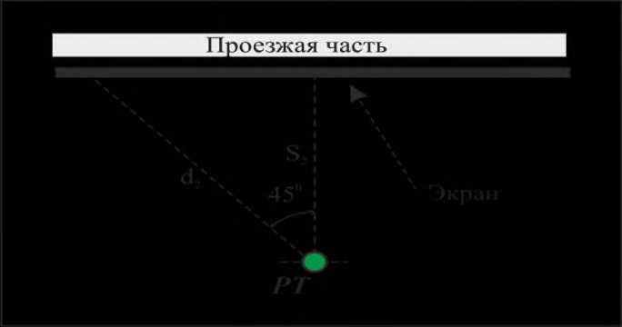
СП 276
.1325800.2016
7.7.4 В случае смешанного покрытия поверхности территории (произвольное сочетание участков мягкого и жесткого покрытия) суммарный эффект поглощения и отражения звука от поверхности, дБ А , допускается рассчитывать по формуле
где hs и hr - высоты акустического центра транспортного потока и расчетной точки над уровнем территории, м (рисунок 7.5);
R sr - расстояние от акустического центра транспортного потока до расчетной точки, м;
Rr - расстояние от мнимого источника (зеркального отражения реального источника шума) до расчетной точки, м.
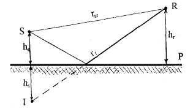
S - источник шума; I мнимый источник шума; R - расчетная точка; r sr - прямой звуковой луч; r r - звуковой луч, отраженный от поверхности; hs - высота источника шума над поверхностью; hr - высота расчетной точки над поверхностью; Р - поверхность территории
Рисунок 7.5 - Пути распространения звука от источника до приемника над поверхностью территории
7.7.5 При наличии шумозащитного сооружения (экрана) поглощение звука поверхностью защищаемой от шума территории между транспортной магистралью и расчетной точкой следует определять по формулам (49)-(52) при акустически мягком покрытии территории и по формулам (53)-(55) при акустически жестком покрытии территории согласно [2]:
В формулах (49)-(55) σ - то же самое, что и в формуле (47), z - параметр, определяемый по формуле
где LА экр -снижение уровня звука экраном, дБ А (при LА экр 18 дБ А z =1,0).
7.7.6 Более точный расчет поглощения звука поверхностью территории между источником шума и расчетной точкой следует выполнять по методике ГОСТ 31295.2. При этом необходимо учитывать, что расчет возможен только для поверхностей, расположенных под скользящим углом менее 20° и имеющих небольшие неровности. Этот случай охватывает большинство задач распространения звука в открытом пространстве.
При этом различают три основные области - область источника, область расчетной точки и промежуточную область (рисунок 7.6).
Рисунок 7.6 - Три основные области при определении затухания звука из-за его поглощения поверхностью территории
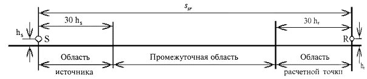
- 7.7.7 Область источника простирается от источника звука по направлению к расчетной точке на расстояние длиной до 30 hs ( hs - высота источника звука, м), но не более расстояния s sr , которое представляет собой проекцию расстояния r sr между источником шума и расчетной точкой на плоскость Р подстилающей поверхности.
7.7.8 Область расчетной точки простирается, наоборот, от расчетной точки по направлению к источнику звука на расстояние, равное 30 hr ( hr высота расчетной точки, м), но не более расстояния ssr .
- 7.7.9 Промежуточная область располагается между областью источника и областью расчетной точки. При условии s sr < 30( hs + hr ) область источника и область расчетной точки частично перекрываются, и промежуточной области не существует.
7.7.10 Акустические характеристики поверхности территории в указанных областях учитывают использованием коэффициента отражения звука от поверхности территории G в соответствии с ГОСТ 31295.2.
При этом различают три категории поверхности территории по звукоотражению:
- твердая поверхность -асфальт, бетонное покрытие, вода, утрамбованный грунт и другие виды грунтового покрытия, имеющие малую пористость; для твердой поверхности G = 0;
- пористая поверхность -земля, покрытая травой и другой растительностью, все виды пористого грунта, пригодные для роста растений, пахотная земля; для пористой поверхности G = 1;
- смешанная поверхность -поверхность, которая состоит как из твердых, так и из пористых участков; для смешанной поверхности коэффициент отражения принимает значения от 0 до 1 пропорционально площади поверхности пористых участков.
7.7.11 Коррекцию, учитывающую общее затухание звука из-за его поглощения поверхностью территории в i -й октавной полосе частот, дБ, определяют по формуле
где Δ Ls - затухание звука в области источника с коэффициентом отражения Gs ;
Δ Lr -затухание звука в области расчетной точки с коэффициентом отражения Gr ;
Δ Lm - затухание звука в промежуточной области с коэффициентом отражения Gm .
7.7.12 Величины Δ Ls , Δ Lr , Δ Lm рассчитывают по формулам, приведенным в таблице 7.2.
Таблица 7.2 - Затухание звука Δ Ls , Δ Lr , Δ Lm
| Номер октавы i | Среднегеометрические частоты октавных полос, Гц | ΔL s , дБ | ΔL r , дБ | ΔL m , дБ |
|---|---|---|---|---|
| 1 | 63 | -1,5 | -1,5 | -3 q |
| 2 | 125 | -1,5 + a(h s )·G s | -1,5 + a(h r )·G r | -3 q (1 - G m ) |
| 3 | 250 | -1,5 + b(h s )·G s | -1,5 + b(h r )·G r | -3 q (1 - G m ) |
| 4 | 500 | -1,5 + c(h s )·G s | -1,5 + c(h r )·G r | -3 q (1 - G m ) |
| 5 | 1000 | - 1,5 + d(h s )·G s | - 1,5 + d(h r )·G r | -3 q (1 - G m ) |
| 6 | 2000 | -1,5 (1 - G s ) | -1,5 (1 - G r ) | -3 q (1 - G m ) |
| 7 | 4000 | -1,5 (1 - G s ) | -1,5 (1 - G r ) | -3 q (1 - G m ) |
| 8 | 8000 | -1,5 (1 - G s ) | -1,5 (1 - G r ) | -3 q (1 - G m ) |
При вычислении поглощения Δ Ls для области источника используют соответствующий коэффициент отражения G = Gs и h = hs .
При вычислении поглощения Δ Lr для области расчетной точки используют соответствующий коэффициент отражения G = Gr и h = hr .
Если имеет место неравенство s sr > 30( hs + hr ), для вычисления поглощения Δ Lm для промежуточной области используют соответствующий коэффициент отражения G = Gm.
Функции a ( h ) , b ( h ) , c ( h ) , d ( h ) определяют по формулам (58)-(61), подставляя вместо h hs или hr в зависимости от области (источник или расчетная точка):
7.8 Снижение уровней шума полосами зеленых насаждений
7.8.1 Для обеспечения дополнительного шумозащитного эффекта следует проектировать вдоль транспортных магистралей специальные шумозащитные полосы зеленых насаждений, которые помимо снижения уровней транспортного шума также частично поглощают вредные выхлопные газы и прочие газообразные выбросы от транспортных средств и создают дополнительный психологический эффект приглушения шума.
7.8.2 Ширина шумозащитных полос зеленых насаждений должна составлять не менее 10-15 м. Расстояние между деревьями в шумозащитной полосе должно быть не более 4 м, высота деревьев не менее 5-8 м и с условием, чтобы воображаемая линия, соединяющая акустический центр транспортного потока с расчетной точкой на уровне середины окон последнего этажа защищаемых от шума зданий, проходила бы на 1,5-2 м ниже верхушек деревьев. Посадка деревьев может быть рядовой или шахматной, причем все подкроновое пространство должно быть полностью заполнено кустарником без просветов. На каждом участке территории могут быть устроены одна или несколько таких полос, расположенных параллельно друг другу и разделенных воздушными промежутками шириной 3-5 м.
7.8.3 В общем случае снижение шума шумозащитными полосами зеленых насаждений зависит от ширины и числа полос, плотности посадки деревьев и кустарников, дендрологического состава и других факторов.
7.8.4 Затухание звука в полосах зеленых насаждений может происходить вблизи источника шума или на участке вблизи расчетной точки, или одновременно в обоих случаях. В качестве ширины полосы зеленых насаждений df следует принимать сумму длины d 1 полосы на участке вблизи источника шума (транспортного потока) и длины d 2 полосы на участке вблизи расчетной точки ( df = d 1 + d 2) (рисунок 7.7). При вычислении длин d 1 и d 2 радиус кривой R дуг, вдоль которой определяются эти длины, составляет 5 км. Для упрощения расчетов допускается определять длины d 1 и d 2 вдоль лучей, исходящих из акустического центра источника шума и из расчетной точки под углом 15° к поверхности территории.
Рисунок 7.7 - Определение ширины ( d 1 + d 2) полосы зеленых насаждений
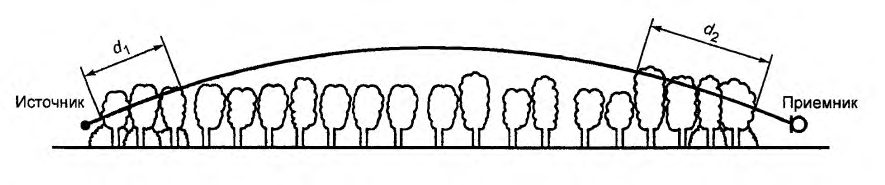
При выполнении расчетов коррекции LА зел , дБ А , учитывающей снижение уровня звука полосами зелёных насаждений следует пользоваться формулой
где df - ширина шумозащитной полосы зеленых насаждений, м;
А зел - постоянная затухания звука в зеленых насаждениях, дБ А /м.
При расчетах принимают А зел = 0,08 дБ А /м.
Формула (62) справедлива при ширине полосы зеленых насаждений не более 100 м. При большей ширине полосы дальнейшее увеличение LА зел значительно замедляется и затруднено для прогнозирования, поэтому при ширине полосы более 100 м принимают такое же значение LА зел, как и для полосы шириной 100 м.
7.8.5 При выполнении расчетов в октавных полосах частот значения коэффициента α зел.окт принимают по таблице 7.3. В первой строке таблицы приведено затухание звука, дБ, в октавных полосах частот в плотной листве при общей длине траектории звука через листву в пределах от 10 до 20 м (включительно). Во второй строке таблицы приведены коэффициенты затухания звука в листве, дБ/м, при общей длине траектории звука через листву в пределах 20-200 м. При длине траектории более 200 м принимают такие же значения коэффициентов затухания звука, как и при 200 м.
Таблица 7.3 - Затухание звука при его распространении через полосу зеленых насаждений
| Длина траектории звука d f , м | Среднегеометрические частоты октавных полос, Гц | Среднегеометрические частоты октавных полос, Гц | Среднегеометрические частоты октавных полос, Гц | Среднегеометрические частоты октавных полос, Гц | Среднегеометрические частоты октавных полос, Гц | Среднегеометрические частоты октавных полос, Гц | Среднегеометрические частоты октавных полос, Гц | Среднегеометрические частоты октавных полос, Гц |
|---|---|---|---|---|---|---|---|---|
| Длина траектории звука d f , м | 63 | 125 | 250 | 500 | 1000 | 2000 | 4000 | 8000 |
| Затухание звука, дБ | Затухание звука, дБ | Затухание звука, дБ | Затухание звука, дБ | Затухание звука, дБ | Затухание звука, дБ | Затухание звука, дБ | Затухание звука, дБ | |
| 10 ≤ d ≤ 20 | 0 | 0 | 1 | 1 | 1 | 1 | 2 | 3 |
| 20 < d ≤ | Коэффициенты затухания звука α зел.окт , дБ/м | Коэффициенты затухания звука α зел.окт , дБ/м | Коэффициенты затухания звука α зел.окт , дБ/м | Коэффициенты затухания звука α зел.окт , дБ/м | Коэффициенты затухания звука α зел.окт , дБ/м | Коэффициенты затухания звука α зел.окт , дБ/м | Коэффициенты затухания звука α зел.окт , дБ/м | Коэффициенты затухания звука α зел.окт , дБ/м |
| 200 | 0,02 | 0,03 | 0,04 | 0,05 | 0,06 | 0,08 | 0,09 | 0,12 |
СП 276
.1325800.2016
7.8.6 При проектировании шумозащитной полосы зеленых насаждений следует учитывать быстроту роста, возможную их высоту, долговечность, форму и плотность кроны, устойчивость по отношению к выхлопным газам. Рекомендуются к применению следующие породы деревьев:
- береза пушистая, дуб, клен остролистный, лиственница сибирская, пихта сибирская, ель, сосна, тополь, осина, липа крупнолистная, ива серебристая (высота свыше 20 м, диаметр кроны 10-15 м);
- клен полевой, ольха серая, ива ломкая, конский каштан (высота 10-20 м, диаметр кроны 5-8 м);
- клен татарский, рябина обыкновенная (высота 5-10 м, диаметр кроны 3-5 м);
- рябина мучнистая, боярышник обыкновенный, черемуха виргинская, туя западная (высота 2-5 м, диаметр кроны 1-3 м).
В качестве кустарникового заполнения рекомендуются:
- крупные кустарники - акация желтая, бирючина, жимолость, сирень, калина, лох, бересклет (высота 4-9 м, диаметр 2-5 м);
- средние кустарники - смородина золотистая, кизильник, чубушник, таволга (высота 1-3 м, диаметр 2-5 м).
Почва в районе зеленой полосы должна быть покрыта густой травой. Это будет способствовать дополнительному поглощению звука в приземном слое.
7.8.7 Следует учитывать, что в холодное время года лиственные деревья сбрасывают листву, и их шумозащитный эффект уменьшается до нуля. Посадки хвойных пород деревьев эффективно снижают шум в течение всего года. Поэтому целесообразно вводить в шумозащитные полосы хвойные породы деревьев, однако следует учитывать, что в городских условиях они часто плохо растут и поэтому их применение в условиях города ограничено.
7.8.8 В условиях сложившейся городской застройки шумозащитные полосы зеленых насаждений практически неприменимы, а обычные городские посадки из отдельно стоящих деревьев шумозащитным эффектом не обладают. Однако при проектировании или реконструкции транспортных дорог в загородной зоне такие посадки могут широко применяться.
7.8.9 При необходимости организации проходов в полосах зеленых насаждений эти проходы следует проектировать под острым углом к транспортной магистрали для уменьшения проникания шума в застройку.
7.9 Снижение уровней шума существующими шумозащитными сооружениями и экранирующими препятствиями
Снижение уровня шума LА экр экранирующими препятствиями на пути звуковых лучей от источника шума к расчетной точке рассчитывают с учетом типа экрана по разделу 11 настоящего свода правил.
7.10 Снижение уровней шума вследствие ограничения угла видимости улицы (дороги) из расчетной точки
7.10.1 Коррекцию, учитывающую ограничение угла видимости улицы (дороги) из расчетной точки, дБ А , рассчитывают по формуле
где α - угол непосредственной видимости улицы (дороги) из расчетной точки (см. рисунок 7.3).
7.9.2 Из расчетной точки могут быть видны под углами α 1 , α 2 , …, αi отдельные участки одной и той же улицы (дороги), не закрытые зданиями или другими экранирующими сооружениями (см. рисунок 7.3). Независимо от этого углы αi суммировать нельзя, расчеты по формуле (63) следует выполнять для каждого угла по отдельности.
7.11 Учет влияния придорожной застройки
Влияние придорожной (примагистральной) застройки на распространение транспортного шума следует учитывать с помощью коррекции по таблице 7.4.
Таблица 7.4 - Коррекция LA застр, учитывающая характер придорожной застройки
В дБ А
| Тип застройки | Поправка при усредненных разрывах между домами на линии застройки, м | Поправка при усредненных разрывах между домами на линии застройки, м | Поправка при усредненных разрывах между домами на линии застройки, м | Поправка при усредненных разрывах между домами на линии застройки, м |
|---|---|---|---|---|
| Менее 10 | 10-20 | 20-30 | Более 30 | |
| Двухсторонняя при расстоянии между линиями застройки, м: | ||||
| 40-50 | -2 | -2 | -1 | -1 |
| 30-40 | -3 | -3 | -2 | -2 |
| 20-30 | -5 | -4 | -3 | -3 |
| 10-20 | -6 | -5 | -4 | -4 |
| Односторонняя при расстоянии до застройки, м: | ||||
| 25-45 | -1 | -1 | 0 | 0 |
| 12-25 | -2 | -2 | -1 | -1 |
| 6-12 | -3 | -3 | -2 | -1 |
7.12 Учет отражения звука от ограждающих конструкций
7.12.1 Коррекцию, учитывающую отражение звука от ограждающих конструкций, вблизи которых расположена расчетная точка, отр А L , дБ А , следует рассчитывать по формуле
Δ
где h р.т - высота расчетной точки, м; b - ширина улицы, м;
СП 276 .1325800.2016
k - коэффициент, зависящий от отношения h р.т / b и принимающий следующие значения:
Значения величины отр А L , дБ А , в зависимости от h р.т / b приведены в таблице 7.5.
Таблица 7.5 - Зависимость величины отраженного звука от высоты расчетной точки и ширины улицы
| h р.т / b | 0,1 | 0,2 | 0,4 | 0,6 | 0,8 | 1,0 | 1,2 | 1,4 | 1,6 | 1,8 | 2,0 |
|---|---|---|---|---|---|---|---|---|---|---|---|
| отр А L , дБ А | 1,3 | 1,5 | 1,8 | 2,2 | 2,5 | 2,8 | 3,2 | 3,5 | 4,0 | 4,8 | 6,0 |
7.12.2 При отсутствии данных о ширине улицы и учитывая, что при акустических расчетах расчетные точки выбирают обычно на расстоянии 2 м от фасадов жилых и общественных зданий, поправку на отражение звука следует принимать равной ∆LА отр = + 3 дБ А , т. е. соответствующей удвоению звуковой энергии.
7.12.3 Все расчеты по снижению уровней звука и уровней звукового давления с расстоянием допускается проводить с помощью программных комплексов, реализующих методику ГОСТ 31295.2. Использование программных комплексов особенно удобно при выполнении расчетов для условий стесненной застройки или при большом числе расчетных точек.
8Определение требуемого снижения уровней транспортного шума
LА экв i = терр экв р.т. А i L - эквивалентный уровень звука, создаваемый в расчетной точке iм источником внешнего шума, дБ А ; i - номер отдельного источника внешнего шума; n - общее число воздействующих на расчетную точку источников внешнего шума.
где LА ок - снижение внешнего шума конструкцией окна.
Согласно [2] LА ок = 10 дБ А . Однако исследования показали, что фактически для меблированных жилых комнат и рабочих кабинетов LА ок = 15 дБ А [3]. В случае применения в зданиях шумозащитных окон, снабженных вентиляционными устройствами с повышенной звукоизоляцией, LА ок может составлять до 30-35 дБ А и более, что позволяет во многих случаях обеспечивать нормативный шумовой режим в помещении даже при достаточно высоких уровнях наружного шума.
где терр экв.тр.дн А L - требуемое снижение эквивалентного уровня звука в расчетной точке на территории в дневной период суток, дБ А ; терр экв. дн А L - эквивалентный уровень звука в расчетной точке на территории в дневной период суток (рассчитывают по формулам раздела 7), дБ А ; терр экв. доп. дн А L - допустимый эквивалентный уровень звука в расчетной точке на территории в дневной период суток (СН 2.2.4/2.1.8.562, СП 51.13330 или таблица 5.1 настоящего свода правил), дБ А ; терр экв.тр.н А L - требуемое снижение эквивалентного уровня звука в расчетной точке на территории в ночной период суток, дБ А ; терр экв. н А L - эквивалентный уровень звука в расчетной точке на территории в ночной период суток (рассчитывают по формулам раздела 7), дБ А ; терр экв. доп. н А L - допустимый эквивалентный уровень звука в расчетной точке на территории в ночной период суток (СН 2.2.4/2.1.8.562, СП 51.13330 или таблица 5.1 настоящего свода правил), дБ А .
где терр макс.тр.дн А L - требуемое снижение максимального уровня звука в расчетной точке на территории в дневной период суток, дБ А ; терр макс. дн А L - максимальный уровень звука в расчетной точке на территории в дневной период суток (рассчитывают по формулам раздела 7), дБ А ; терр макс. доп. дн А L - допустимый максимальный уровень звука в расчетной точке на территории в дневной период суток (СН 2.2.4/2.1.8.562, СП 51.13330 или таблица 5.1 настоящего свода правил), дБ А ; терр макс.тр.н А L - требуемое снижение максимального уровня звука в расчетной точке на территории в ночной период суток, дБ А ; терр макс. н А L - максимальный уровень звука в расчетной точке на территории в ночной период суток (рассчитывают по формулам раздела 7), дБ А ; терр макс. доп. дн А L - допустимый максимальный уровень звука в расчетной точке на территории в ночной период суток (СН 2.2.4/2.1.8.562, СП 51.13330 или таблица 5.1 настоящего свода правил), дБ А .
где пом экв.тр.дн А L - требуемое снижение эквивалентного уровня звука в расчетной точке внутри помещения в дневной период суток, дБ А ; пом экв. дн А L - эквивалентный уровень звука в расчетной точке внутри помещения в дневной период суток, дБ А , рассчитывают по формуле (65); пом экв. доп. дн А L - допустимый эквивалентный уровень звука в расчетной точке внутри помещения в дневной период суток, дБ А ; пом экв.тр.н А L - требуемое снижение эквивалентного уровня звука в расчетной точке внутри помещения в ночной период суток, дБ А ; пом экв. н А L - эквивалентный уровень звука в расчетной точке внутри помещения в ночной период суток, рассчитывают по формуле (65), дБ А ; пом экв. доп. н А L - допустимый эквивалентный уровень звука в расчетной точке внутри помещения в ночной период суток, дБ А .
где пом макс.тр.дн А L - требуемое снижение максимального уровня звука в расчетной точке внутри помещения в дневной период суток, дБ А ; пом макс. дн А L - максимальный уровень звука в расчетной точке внутри помещения в дневной период суток, рассчитывают по формуле, аналогичной формуле (65), заменяя эквивалентный уровень звука на максимальный, дБ А ; пом макс. доп. дн А L - допустимый максимальный уровень звука в расчетной точке внутри помещения в дневной период суток, дБ А ; пом макс.тр.н А L - требуемое снижение максимального уровня звука в расчетной точке внутри помещения в ночной период суток, дБ А ; пом
А макс. н
- максимальный уровень звука в расчетной точке внутри помещения в ночной период суток, рассчитывают по формуле, аналогичной формуле (65), заменяя эквивалентный уровень звука на максимальный, дБ А ; пом макс.. доп. дн А L - допустимый максимальный уровень звука в расчетной точке внутри помещения в ночной период суток, дБ А .
СП 276
.1325800.2016
9Снижение транспортного шума организационно-планировочными мероприятиями и шумозащитными сооружениями
- функциональное зонирование территории с отделением жилых и рекреационных зон от основных транспортных коммуникаций, промышленных и коммунально-складских зон, создание буферных зон;
- концентрация основных транспортных потоков на небольшом числе магистральных улиц скоростного и грузового движения с высокой пропускной способностью, проходящих по возможности вне жилой застройки (по границам промышленных и коммунально-складских зон, в полосах отвода железных дорог);
- частичное ограничение или полное запрещение движения грузовых автомобилей в отдельные периоды времени суток или организация грузового движения по дублирующим дорогам;
- организация на ряде городских улиц движения с ограниченной скоростью;
- организация саморегулируемого кольцевого движения на пересечениях в одном уровне;
- использование при трассировке улиц (дорог) особенностей рельефа
СП 276
.1325800.2016 местности в качестве естественных преград на пути распространения шума, прокладывая дороги на этих участках, по возможности, в естественных выемках, по дну оврагов, ложбин и т. п.;
- создание системы парковки автомобилей на границе жилых районов и групп жилых домов;
- развитие общественного транспорта;
- сохранение существующих зеленых массивов или проектирование шумозащитных полос зеленых насаждений;
- размещение жилой застройки вдоль магистральной автомобильной или железной дороги на расстоянии, обеспечивающем необходимое снижение шума.
При невозможности выполнения этого условия следует предусматривать использование шумозащитных экранов в виде вертикальных или наклонных стенок, а в загородных условиях также в виде выемок, насыпей, валов применять экраны комбинированного типа (например, одновременное применение насыпи и установленного на ней экрана-стенки), устраивать галереи, тоннели;
- для жилых районов, микрорайонов, кварталов в городской застройке следует предусматривать размещение в первом эшелоне застройки магистральных улиц многоэтажных шумозащитных зданий, использование в качестве экранов зданий нежилого назначения -торговых центров, гаражей, предприятий коммунально-бытового обслуживания и т. п., особенно в разрывах между зданиями.
Таблица 9.1- Предварительная оценка эффективности некоторых шумозащитных мероприятий
| Мероприятие для снижения транспортного шума | Акустическая эффективность мероприятия (снижение уровня шума) |
|---|---|
| Частичное или полное перекрытие проезжей части (тоннели, шумозащитные галереи) | Значительный шумозащитный эффект, а в случае тоннелей полное обеспечение требований санитарных норм, за исключением моментов въезда в тоннель и выезда из тоннеля транспортных средств на высокой скорости, когда наблюдается звуковой хлопок |
| Строительство шумозащитных экранов | До 15-20 дБ А |
| Применение малошумного покрытия проезжей части по сравнению с плотным асфальтобетонным покрытием | До 3 дБ А |
| Создание в населенных пунктах зон с ограничением скорости движения транспортного потока | До 3 дБ А |
| Замена светофорного регулирования пересечений на кольцевые пересечения | До 4 дБ А |
| Запрещение движения грузовых автомобилей и мотоциклетных потоков в ночное время | До 7 дБ А (в зависимости от состава транспортного потока и скорости движения) |
- естественные и искусственные элементы рельефа местности - выемки, овраги, холмы, насыпи, земляные кавальеры, грунтовые валы и т. п.;
- шумозащитные здания и здания нежилого назначения, в помещениях которых допускаются уровни шума более 50 дБ А ;
- искусственные сооружения в виде придорожных подпорных, ограждающих стенок (со стороны внешнего откоса выемки), шумозащитных экранов различной формы, сооружений, частично или полностью закрывающих проезжую часть (галереи, тоннели мелкого заложения);
СП 276
.1325800.2016
- комбинированные сооружения, представляющие собой всевозможные комбинации вышеуказанных решений, например комбинация «шумозащитный вал - экран-стенка» или «выемка-экран-стенка» на бровке выемки и др.
- обеспечивать снижение уровней транспортного шума, проникающих в прилегающие к транспортным магистралям жилые, общественно-деловые и рекреационные зоны и расположенную в них жилую и общественную застройку, до допустимых уровней, регламентируемых санитарными нормами, либо в противном случае обеспечивать максимально возможное снижение уровней транспортного шума;
- не ухудшать безопасность дорожного движения, не допускать ограничения видимости на дорогах и не создавать опасности дорожно-транспортных происшествий (ДТП);
- не создавать препятствий для оказания помощи и эвакуации пострадавших при ДТП и других экстренных случаях, а также для доступа работников дорожной полиции, пожарной и иных служб;
- не нарушать систему водоотвода с проезжей части;
- допускать проход населения к остановкам общественного транспорта и наземным пешеходным переходам; в необходимых случаях следует предусматривать меры по предотвращению выхода диких животных на проезжую часть, устраивая в местах миграции животных подземные проходы под магистралью;
- быть долговечными, устойчивыми к саморазрушению, к коррозии материалов, к атмосферным воздействиям, к вредному влиянию выхлопных газов и антигололедных реагентов, обладать механической прочностью, устойчивостью к снеговым, ветровым и сейсмическим нагрузкам, быть вандалозащищенными;
- не выделять вредных веществ, особенно в количествах, превышающих предельно допустимые концентрации (ПДК);
- быть удобными и безопасными при производстве работ по содержанию и ремонту сооружения, при очистке дорог от снега;
- быть пожаро- и электробезопасными;
- сохранять шумозащитные свойства в широком диапазоне температур от минус 55 °C до плюс 50 °C;
- иметь срок службы не менее 15 лет;
- размещаться, по возможности, в постоянной полосе отвода дороги;
- предотвращать снегозаносимость грунтового полотна дорог;
- быть архитектурно выразительными, вписываться в ландшафт окружающей местности;
- иметь оптимальную стоимость.
10Придорожные шумозащитные экраны
10.1Общие положения
Рисунок 10.1 - Различные пути распространения звука вокруг экрана
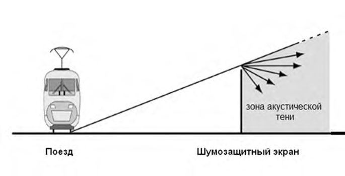
Таблица 10.1 - Требуемая минимальная поверхностная плотность конструкции экрана в зависимости от требуемого снижения уровня звука
| Требуемое снижение уровня звука экраном, дБ А | 5 | 10 | 14 | 16 | 18 | 20 | 22 | 24 |
|---|---|---|---|---|---|---|---|---|
| Минимально требуемая поверхностная плотность конструкции экрана, кг/м² | 14,5 | 17 | 18 | 19,5 | 22 | 24,5 | 32 | 39 |
Рисунок 10.2 - Зона акустической тени за экраном
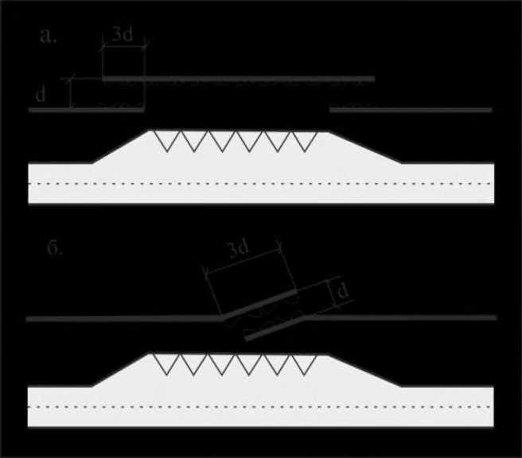
Пространство под прямой за экраном представляет собой зону акустической тени. В область пространства над этой прямой транспортный шум проникает беспрепятственно, и шумозащитный эффект экрана здесь отсутствует.
10.2Классификация шумозащитных экранов
- принцип действия;
- тип установки;
- размеры и формы;
- конструктивное решение верхней части экрана;
- светопропускание;
- материалы, из которых изготовлен экран.
- отражающие;
- отражающе-поглощающие (с облицовкой одной поверхности экрана звукопоглощающим материалом).
- прямые (вертикальные стенки);
- наклонные;
- односторонние (устанавливаемые с одной стороны дороги);
- двухсторонние (устанавливаемые с обеих сторон дороги);
- устанавливаемые на земляном полотне дороги в непосредственной близости от проезжей части;
- устанавливаемые вне земляного полотна дороги на берме, но в пределах полосы отвода;
- устанавливаемые на самостоятельном фундаменте;
- устанавливаемые без фундамента.
- малой высоты - до 2 м;
- средней высоты - 2-6 м;
- высокие - высотой более 6 м;
- экраны ограниченной длины (боковые кромки экрана видны из расчетной точки, расположенной напротив центральной части экрана, под углом 160°);
- протяженные экраны (экраны такой длины, при которой боковые кромки экрана видны из расчетной точки, расположенной напротив центральной части экрана, под углом > 160°);
- тонкие экраны-стенки;
- толстые экраны (насыпи, валы, выемки, здания).
- прямолинейные (параллельные дороге или расположенные под некоторым углом к ней);
- криволинейные;
- ступенчатые (с карманами).
- без особенностей;
- в виде наклонной полки (Г-образный экран);
- Т-образная;
- Y-образная;
- стрелообразная;
- цилиндрообразная;
- эллипсообразная.
- ровными;
- иметь уступы разнообразной формы, в ряде случаев заполненные землей и посадками декоративных растений.
- непрозрачные;
- прозрачные (светопроницаемые);
- тонированные;
- комбинированные.
- грунт (грунтовые валы, насыпи);
- сборный и монолитный бетон;
- блоки искусственного и естественного камня, габионы;
- кирпич;
- пластмасса, композитные материалы;
- древесина, фанера;
- металл (стальной или алюминиевый лист).
10.3Общие требования к шумозащитным экранам
Таблица 10.2 - Оценка сложности достижения требуемого снижения шума с помощью экраном
| Требуемое снижение уровня шума, дБ А | 5 | 10 | 15 | 20 |
|---|---|---|---|---|
| Сложность достижения результатов | Легко | Достижимо (возможно) | Сложно | Очень сложно |
Таблица 10.3 - Преимущества и недостатки основных типов материалов, применяемых для изготовления экранов
| Тип материала | Преимущества | Недостатки |
|---|---|---|
| Бетон | Высокая звукоизолирующая способность, хорошие отражающие свойства, долговечность, простота эксплуатации - | Большой вес, сложность сооружения |
| Металл | Удобство монтажа, меньший вес по сравнению с экранами из бетона и железобетона, возможность декоративного профилирования поверхности | Недолговечность из-за подверженности коррозии |
| Пропитанная древесина | Хорошие звукопоглощающие свойства, долговечность - | Пожароопасность |
| Прозрачный пластик | Сохранение визуального обзора придорожного пространства, удобная интеграция в существующий пейзаж, долговечность - | Необходима постоянная очистка, высокая стоимость, повышенное отражение от экрана света фар, наличие акустических переотражений |
СП 276
.1325800.2016
10.4Акустические требования к шумозащитным экранам
От отражающих экранов звуковая энергия отражается в противоположную от защищаемого объекта сторону.
Отражающе-поглощающие экраны в результате поглощения части звуковой энергии способствуют уменьшению уровней звука в застройке на противоположной стороне дороги и в салонах проезжающих автомобилей.
- жилая застройка, расположенная на противоположной защищаемой застройке стороне магистрали, находится на расстоянии, более чем в 20 раз превышающем высоту экрана;
- жилая застройка, расположенная на противоположной защищаемой застройке стороне магистрали, находится ниже уровня дороги:
- шум отражается наклонным шумозащитным экраном в зону, не требующую защиты от шума.
Примечание - Угол наклона экрана представляет собой угол между вертикалью и плоскостью экрана.
СП 276
.1325800.2016
- жилая застройка, расположенная на противоположной от защищаемой застройки стороне магистрали, находится на расстоянии, менее чем в 20 раз превышающем высоту экрана;
- если необходимо воспрепятствовать повышению уровня звука за шумозащитным экраном вследствие многократного отражения звука от высоких кузовов автомобилей, автобусов, троллейбусов, трамваев при высоте экрана до 3,5 м, при близком расположении экрана от проезжей части и при многоэтажной жилой застройке;
- если экраны устанавливают напротив друг друга на противоположных сторонах транспортной магистрали.
10.5Требования к размещению шумозащитных экранов
Экраны располагают вдоль транспортной дороги в полосе отвода со стороны самой крайней полосы движения (самого крайнего пути).
СП 276
.1325800.2016
Особенно тщательно надо подходить к размещению экранов вдоль железных дорог. В таких случаях экраны надо устанавливать так, чтобы опоры контактной сети и средства связи, централизации и блокировки (в частности, релейные шкафы, системы автоматики, телемеханики и др.) находились бы между железнодорожными путями и экраном, т. е. чтобы экран не отделял указанные устройства от железнодорожных путей.
СП 276
.1325800.2016
При движении ветроснегового потока со стороны проезжей части снег откладывается на стороне экрана, обращенной к проезжей части. Когда ветроснеговой поток направлен со стороны расчетной точки, снег откладывается на подветренной стороне сооружения, что уменьшает снегозаносимость проезжей части.
На участках, где возможен перенос снега, минимальные расстояния от бровки земляного полотна до шумозащитного сооружения, обеспечивающие снегонезаносимость дороги, необходимо принимать в соответствии с таблицей 10.4.
Таблица 10.4 - Минимальные расстояния от бровки земляного полотна до шумозащитного сооружения, обеспечивающие снегонезаносимость дороги
| Высота шумозащитного сооружения, м | Объем снега, задерживаемый шумозащитным сооружением, м³ на 1 пог. м | Расстояние от бровки земляного полотна до шумозащитного сооружения при движении ветроснегового потока, м | Расстояние от бровки земляного полотна до шумозащитного сооружения при движении ветроснегового потока, м |
|---|---|---|---|
| Высота шумозащитного сооружения, м | Объем снега, задерживаемый шумозащитным сооружением, м³ на 1 пог. м | стороны проезжей части | со стороны защищаемой территории |
| 1 | 12-15 | 10 | 12-13 |
| 2 | 50 | 20 | 25 |
| 3 | 110 | 30 | 40 |
| 4 | 200 | 40 | 50 |
| 5 | 300 | 50 | 65 |
| 6 | 440 | 60 | 80 |
| 7 | 600 | 70 | 90 |
| 8 | 800 | 80 | 100 |
10.6Требования к элементам конструкции шумозащитных экранов
СП 276
.1325800.2016 многослойными панелями, опирающимися друг на друга, при этом нижний ряд панелей должен опираться на самостоятельный железобетонный фундамент, который должен быть столбчатым, ленточным монолитным или свайным с ростверком. Фундаменты экранов должны быть рассчитаны на механическую прочность по несущей способности и по деформациям.
СП 276
.1325800.2016 типа, или защитной полиэтилентерафталатной пленкой толщиной не более 50 мкм, или покрытый звукопрозрачной сеткой.
Перфорированная поверхность экрана должна располагаться со стороны источника шума -транспортной дороги. Звукопоглощающие материалы, используемые при изготовлении экрана, должны обладать стабильными физикомеханическими и акустическими показателями в течение всего периода эксплуатации.
Толщина акустической панели в зависимости от ее конструкции и звукопоглощающего материала обычно составляет от 80 до 250 мм.
10.7Требования к устройству контр-экранов и дверей в шумозащитных экранах
Требуемая длина контр-экрана l к.-экр, м, должна составлять:
где l разр - ширина разрыва в основном экране, м; d - ширина прохода между основным экраном и контр-экраном, м.
Ширина прохода d должна составлять не менее 2 м. а) - контр-экран; б) - дубль-экран
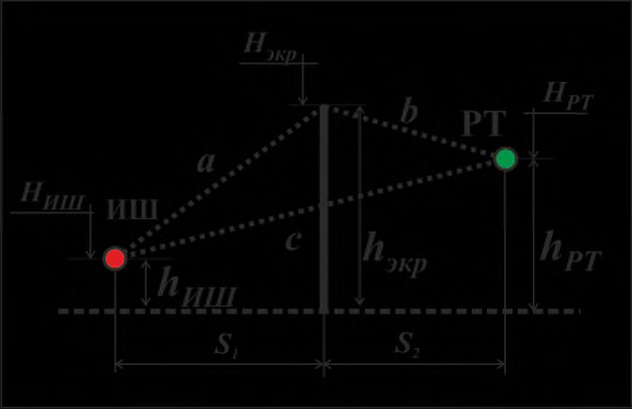
Рисунок 10.3 - Схемы устройства контр-экранов и дубль-экранов
Чтобы не допустить снижения акустической эффективности основного экрана в месте разрыва, высоту контр-экрана следует принимать на 0,6 м больше высоты основного экрана H экр, если она составляет H экр = 3,0-4,5 м, и на 0,9 м больше, если 4,5 < H экр< 6,0 м.
СП 276
.1325800.2016 легкосъемные элементы либо разрывы для проезда специальных машин (скорой медицинской помощи, пожарной службы и т. п.).
10.8Требования к пожарной безопасности шумозащитных экранов
- сохранялась несущая способность строительных конструкций в течение установленного нормативными документами времени;
- ограничивались возгорание и распространение огня и дыма посредством применения противопожарных дверей и других мероприятий, затрудняющих распространение пожара;
- ограничивалось распространение пожара на соседние строительные объекты, в частности, с помощью устройства противопожарных разрывов;
- обеспечивались безопасность персонала спасательных служб и возможность эвакуации людей в безопасную зону;
- обеспечивались доступ противопожарных подразделений и спасателей для ликвидации возгораний, возможность доставки средств пожаротушения;
СП 276
.1325800.2016
- с обеих сторон сооружения были предусмотрены гидранты и пожарные проходы.
10.9Требования к электрозащищенности шумозащитных экранов
- экран должен иметь единую главную заземляющую шину,
СП 276
.1325800.2016 соединяющую все металлические элементы экрана, все соединения должны быть визуально контролируемы;
- главная заземляющая шина должна быть изготовлена из меди;
- проводники, соединяющие главную заземляющую шину с заземлителями, должны быть максимально короткими и выполненными двумя многожильными медными кабелями сечением не менее 25 мм² каждый или двумя плоскими стальными полосами сечением не менее 100 мм² каждая;
- заземляющие провода к заземлителю должны быть подключены с использованием разборных контактных соединителей, обеспечивающих возможность отключения заземлителя от главной заземляющей шины;
10.10Эстетико-психологические требования к шумозащитным экранам
- формированию единого стиля дороги;
- созданию системы доминант;
- улучшению существующего ландшафта;
- декорированию неэстетичных мест;
- членению территорий для обеспечения их восприятия и увязки дороги с ландшафтом местности.
СП 276
.1325800.2016
СП 276
.1325800.2016 ломаную верхнюю линию, подчеркивающую строгие линии застройки различной этажности. С этой целью следует использовать панели различной высоты.
СП 276
.1325800.2016
Нежелательно окрашивать бетонные экраны, придание цвета их поверхностям целесообразно проводить при изготовлении путем добавления красителя в цементный раствор.
11Расчет параметров и акустической эффективности шумозащитных экранов
11.1Расчет акустической эффективности шумозащитного экрана-стенки, определение требуемых длины и высоты
- расчетная точка (РТ)
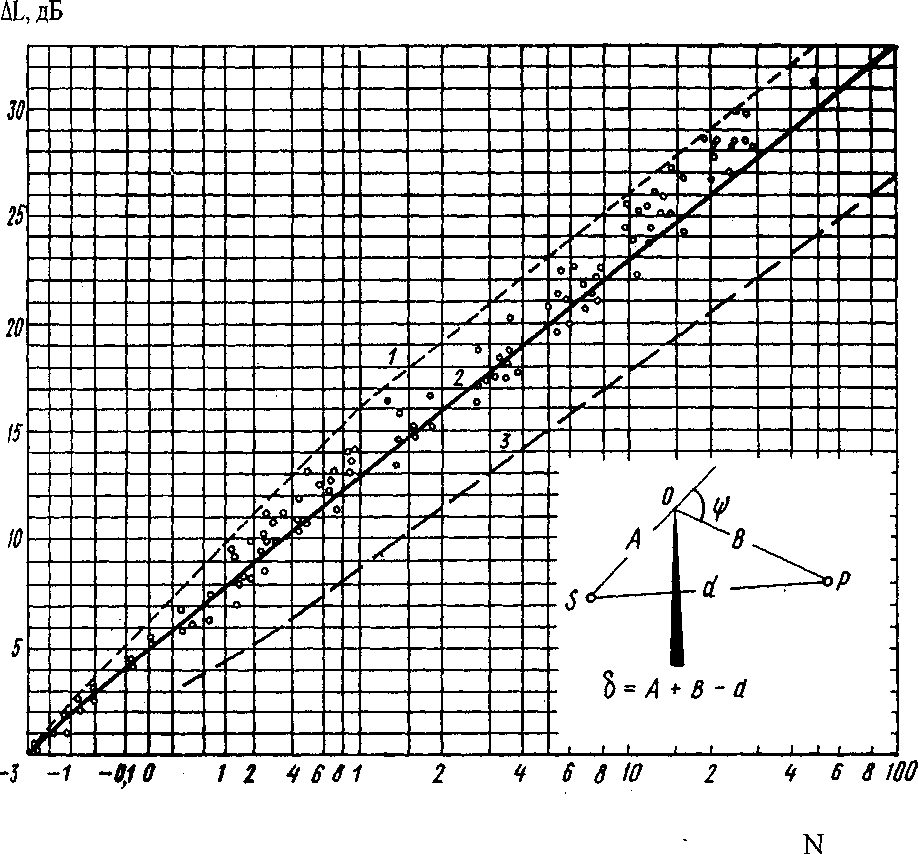
Рисунок 11.1 - Определение длины экрана за пределами жилой застройки
Рисунок 11.2 - Боковые отгоны экрана
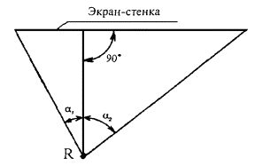
основной части экрана, предупреждая проникание шума в защищаемую застройку с боков основного экрана.
На ситуационном плане рассматриваемого участка жилой, общественноделовой и рекреационной зон из крайней правой (соответственно - крайней левой) расчетной точки, наиболее удаленной от магистрали, опускается перпендикуляр на продольную ось магистрали и под углом в 80° к нему проводится луч в направлении к магистрали в правую и левую сторону соответственно (см. рисунок 11.2). Боковой отгон проводится от края экрана ограниченной длины до соответствующего луча. Требуемую длину бокового отгона измеряют по ситуационному плану. По экономическим соображениям следует принимать минимальную возможную длину бокового отгона.
Высота экрана в боковом отгоне должна быть не ниже высоты основной части экрана.
δ = где а - кратчайшее расстояние от акустического центра транспортного потока до верхней кромки экрана, м; b - кратчайшее расстояние от верхней кромки экрана до расчетной точки, м; c -кратчайшее расстояние от акустического центра транспортного потока до расчетной точки, м.
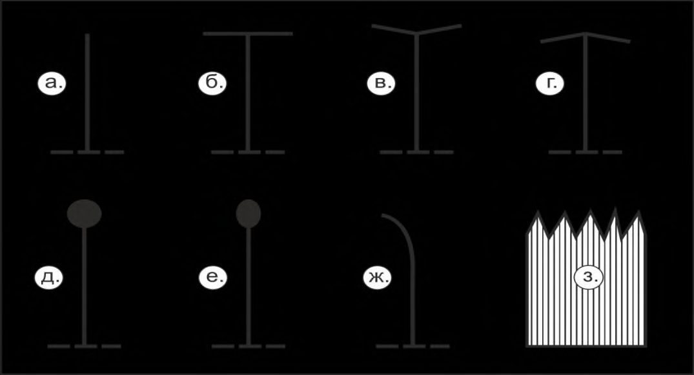
h и.ш - высота источника шума над поверхностью проезжей части; h экр - высота экрана; h р.т - высота расчетной точки над поверхностью земли; H и.ш - отметка источника шума; H экр - отметка верха экрана; H р.т - отметка расчетной точки
Рисунок 11.3 - Расчетная схема определения разности длин путей звукового луча δ для экрана-стенки
где h и.ш - высота источника шума над уровнем территории, м; h экр -высота экрана, м; h р.т -высота расчетной точки над уровнем территории, м;
S 1 -расстояние по горизонтали от источника шума до экрана, м;
S 2 -расстояние по горизонтали от экрана до расчетной точки, м.
где λ - длина звуковой волны, принимаемая при расчетах уровней звука равной:
- для потоков автомобилей, автобусов, троллейбусов λ = 0,84 м;
- для потоков трамваев λ = 0,6 м;
- для потоков железнодорожных поездов и водных судов λ = 0,42 м.
По числу Френеля и на основании графика Маекавы находят акустическую эффективность экрана (кривая 3 на рисунке 11.4) (см. также [6]).
Формула (83) применима для расстояний от источника шума до расчетной точки не более 200 м. Для бόльших расстояний акустическую эффективность экрана следует рассчитывать по ГОСТ 31295.2.
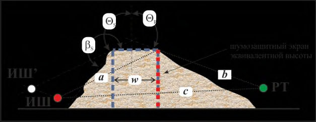
1 - расчет по методу Кирхгофа; 2 расчет по методу Маекавы для точечного источника шума; 3 - расчет по методу Маекавы для линейного источника шума
Рисунок 11.4 - Снижение звука экраном в свободном пространстве
Вначале по кривой 3 на рисунке 11.4 определяют акустическую эффективность протяженного экрана LА экр.пр , имеющего ту же высоту и расположенного на том же расстоянии от дороги, что и данный экран ограниченной длины.
Для экрана ограниченной длины 1 + 2 160°; при невыполнении этого условия экран относится к протяженным экранам.
Рисунок 11.5 - Схема расчета экрана ограниченной длины
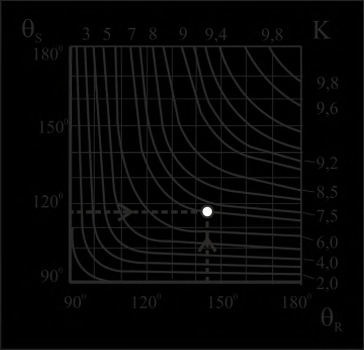
где LА э. - меньшая из величин LА э. 1 и LА э. 2 , дБ А ;
q - поправка, определяемая по таблице 11.2 в зависимости от разности величин LА э. 1 и LА э. 2, взятой со знаком «плюс», дБ А .
Таблица 11.1 - Снижение уровня звука экраном в зависимости от угла 1 или 2
| Угол 1 или 2 , град | 45 | 50 | 55 | 60 | 65 | 70 | 75 | 80 | 85 |
|---|---|---|---|---|---|---|---|---|---|
| Величина L А экр , дБ А | Снижение уровня звука при данном угле α 1 или α 2 , Δ L А экр. α 1 и Δ L А экр α 2 , дБ А | Снижение уровня звука при данном угле α 1 или α 2 , Δ L А экр. α 1 и Δ L А экр α 2 , дБ А | Снижение уровня звука при данном угле α 1 или α 2 , Δ L А экр. α 1 и Δ L А экр α 2 , дБ А | Снижение уровня звука при данном угле α 1 или α 2 , Δ L А экр. α 1 и Δ L А экр α 2 , дБ А | Снижение уровня звука при данном угле α 1 или α 2 , Δ L А экр. α 1 и Δ L А экр α 2 , дБ А | Снижение уровня звука при данном угле α 1 или α 2 , Δ L А экр. α 1 и Δ L А экр α 2 , дБ А | Снижение уровня звука при данном угле α 1 или α 2 , Δ L А экр. α 1 и Δ L А экр α 2 , дБ А | Снижение уровня звука при данном угле α 1 или α 2 , Δ L А экр. α 1 и Δ L А экр α 2 , дБ А | Снижение уровня звука при данном угле α 1 или α 2 , Δ L А экр. α 1 и Δ L А экр α 2 , дБ А |
| 6 | 1,2 | 1,7 | 2,3 | 3,0 | 3,8 | 4,5 | 5,1 | 5,7 | 6,0 |
| 8 | 1,7 | 2,3 | 3,0 | 4,0 | 4,8 | 5,6 | 6,5 | 7,4 | 8,0 |
| 10 | 2,2 | 2,9 | 3,8 | 4,8 | 5,8 | 6,8 | 7,8 | 9,0 | 10,0 |
| 12 | 2,4 | 3,1 | 4,0 | 5,1 | 6,2 | 7,5 | 8,8 | 10,2 | 11,7 |
| 14 | 2,6 | 3,4 | 4,3 | 5,4 | 6,7 | 8,1 | 9,7 | 11,5 | 13,3 |
| 16 | 2,8 | 3,6 | 4,5 | 5,7 | 7,0 | 8,6 | 10,4 | 12,4 | 15,0 |
| 18 | 2,9 | 3,7 | 4,7 | 5,9 | 7,3 | 9,0 | 10,8 | 13,0 | 16,8 |
| 20 | 3,2 | 3,9 | 4,9 | 6,1 | 7,6 | 9,4 | 11,3 | 13,7 | 18,7 |
| 22 | 3,3 | 4,1 | 5,1 | 6,3 | 7,9 | 9,8 | 11,9 | 14,5 | 20,7 |
| 24 | 3,5 | 4,3 | 5,8 | 6,5 | 8,2 | 10,2 | 12,6 | 15,4 | 22,6 |
Таблица 11.2 - Поправки q
| Разность L А э. 1 - L А э. 2 , дБ А | 0 | 2 | 4 | 6 | 8 | 10 | 12 | 14 | 16 | ≥18 |
|---|---|---|---|---|---|---|---|---|---|---|
| Поправка q , дБ А | 0 | 0,8 | 1,5 | 2 | 2,4 | 2,6 | 2,8 | 2,9 | 2,9 | 3,0 |
СП 276
.1325800.2016 расположить экран ближе к дороге, однако акустическая эффективность экрана при этом будет заметно снижена).
Следует также рассмотреть возможность применения шумозащитного остекления в зданиях, расположенных вблизи транспортной дороги, что обеспечивает дополнительное снижение шума внутри жилых помещений.
11.2Повышение акустической эффективности шумозащитного экранастенки с помощью звукопоглощающей облицовки экрана и устройства полки в верхней части экрана
110 11.2.1 Для экранов, предназначенных для установки на улицах или дорогах с двухсторонним расположением защищаемых от шума зданий, должны быть предусмотрены со стороны магистрали звукопоглощающие конструкции в виде резонирующих панелей, звукопоглощающих облицовок или заполнений.
СП 276
.1325800.2016
Для этих целей допустимо применение экранов с различной формой верхней полки. Основные варианты формы верхней полки экрана, рекомендуемые к применению, показаны в схематическом виде на рисунке 11.6.
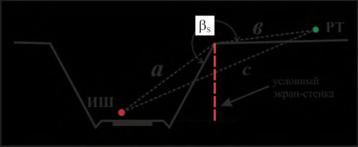
- а) - вертикальный экран-стенка (традиционное решение); б) - Т-образная верхняя часть экрана; в) - Y-образная верхняя часть экрана;
- г) - стрелообразная верхняя часть экрана; д) - цилиндрообразная верхняя часть экрана; е) - эллипсообразная верхняя часть экрана;
- ж) - криволинейный экран; и) - пилообразная верхняя часть экрана
Рисунок 11.6 - Схемы устройства верхней части экранов
- для луча а (см. рисунок 11.3):
- для луча b (см. рисунок 11.3):
при условии, что h р.т > hэ и h р.т< ( hэ + n cos α );
при условии, что точки, соответствующие ( h э + n cos α ), h э и h р.т лежат на одной прямой;
при условии, что расчетная точка расположена ниже прямой, на которой лежат точки, соответствующие ( h э + n cos α ), h э и h р.т ;
- для луча с (см. рисунок 11.3):
СП 276
.1325800.2016
где a, b, c - то же, что и в формулах (76)-(78);
S 1 , S 2 , h и.ш , h р.т - то же, что и в формулах (76) - (78); h экр - высота экрана без учета полки, м; l п - ширина полки, м; α -угол наклона полки, град.
Сравнивая полученные при этом результаты с результатами расчета акустической эффективности прямого экрана (без полки), можно оценить дополнительный эффект, обеспечиваемый устройством полки в верхней части экрана. Варьируя шириной полки и углом ее наклона, следует подобрать, учитывая также стоимость сооружения полки, наиболее подходящий вариант устройства верхней полки.
СП 276
.1325800.2016 транспортным шумом в жилых, общественно-деловых и рекреационных зонах и жилой застройке, увеличение акустической эффективности экрана хотя бы на 2-3 дБ А является неплохим результатом. Поэтому целесообразно предусматривать в верхней части экрана полку, предпочтительно Г- или Т-образной формы.
11.3Расчет акустической эффективности шумозащитного экрана в виде грунтового шумозащитного вала
- откос грунтового вала не отражает шум на противоположную от защищаемой сторону, представляет собой удобное место для посадки зеленых насаждений, что значительно улучшает эстетичность земляного вала;
- валы сочетаются с местным ландшафтом и по сравнению с экранами создают чувство открытости пространства;
СП 276
.1325800.2016
- при устройстве валов обычно не требуются ограждения;
- стоимость сооружения валов невелика;
- содержание валов не представляет особых сложностей;
- валы имеют большой срок службы.
- треугольный или трапецеидальный шумозащитный вал с шириной верхней части не более 2 м рассчитывают как тонкий шумозащитный экранстенку, вписанный в наиболее высокое сечение вала;
- при ширине верхней части вала от 2 до 4 м расчет выполняют по аналогии с тонким экраном-стенкой, размещенным под ближней к расчетной точке вершиной вала;
- расчет трапецеидального вала с шириной верха более 4 м, но менее 10 м выполняют по аналогии с расчетом двух тонких шумозащитных экранов, расположенных под вершинами вала;
- при ширине верхней части шумозащитного вала свыше 10 м применяют расчетную схему, приведенную на рисунке 11.7. Для этого в разрез вала вписывают прямоугольный параллелепипед, определяют его ширину w, внешний угол откоса вала S и углы Θ S и Θ R между перпендикуляром к вершине вала и лучами a и b соответственно.
где LА экр.вал - снижение уровня звука шумозащитным валом, дБ А ;
LА усл.ст - снижение уровня звука условным экраном-стенкой, дБ А ; w - ширина вписанного прямоугольного параллелепипеда, м;
Для других значений угла s величину DL находят интерполяцией.
Рисунок 11.7 - Схема для определения расчетных параметров широкого шумозащитного вала
Рисунок 11.8 - Номограмма для определения расчетных значений параметра К
Аналогично шумозащитному валу выполняют расчет акустической эффективности подобных естественных элементов рельефа (холмы, возвышенности).
СП 276
.1325800.2016
СП 276
.1325800.2016 предусматривать отвод воды с обеих сторон вала и обеспечивать дренирование воды из подстилающих слоев дорожной одежды.
11.4Расчет акустической эффективности шумозащитного экрана в виде шумозащитной выемки
120 На разрезе выемки на чертеже из верхнего края (бровки) выемки опускают перпендикуляр на основание выемки (см. рисунок 11.9), измеряют его высоту, которая соответствует высоте условного экрана-стенки, вписанного в выемку. Отмечают расчетную точку за пределами бровки выемки и акустический центр транспортного потока на высоте 1 м над осью самой дальней полосы движения автотранспорта (или на высоте 1 м над уровнем головки рельса железнодорожного транспорта) и определяют в соответствии с рисунком 11.9 величины a, b, c и внешний угол выемки S . По 11.1 рассчитывают экранирующий эффект условного экрана-стенки LА усл.ст , вписанного в выемку
где поправка DL - та же, что и в формуле (90).
Рисунок 11.9 - Схема расчета разности длин путей звуковых лучей для оценки акустической эффективности выемки
11.5Комбинированные шумозащитные сооружения
СП 276 .1325800.2016
где LА вал - акустическая эффективность шумозащитного вала, дБ А ;
∆ LA э.доп - акустическая эффективность дополнительного экрана-стенки, дБ А .
где ∆LA э.выем - акустическая эффективность выемки, дБ А ;
∆LA э.доп - акустическая эффективность дополнительного экрана-стенки, дБ А .
12Расчет требуемого снижения транспортного шума шумозащитными окнами в жилых и общественных зданиях и рекомендации по их выбору
СП 276 .1325800.2016
основании эталонного спектра шума потока городского транспорта. Уровни звукового давления эталонного спектра, скорректированные по частотной характеристике А по ГОСТ 17187 и нормированные для уровня звука 75 дБ А , приведены в таблице 12.1.
Результаты вычислений округляют до целых значений.
Таблица 12.1 - Скорректированные по частотной характеристике А по ГОСТ 17187 уровни звукового давления эталонного спектра
| Среднегеометрические частоты третьоктавных полос, Гц | Скорректированные уровни звукового давления эталонного спектра L эт ,i , дБ |
|---|---|
| 100 | 55 |
| 125 | 55 |
| 160 | 57 |
| 200 | 59 |
| 250 | 60 |
| 315 | 61 |
| 400 | 62 |
| 500 | 63 |
| 630 | 64 |
| 800 | 66 |
| 1000 | 67 |
| 1250 | 66 |
| 1600 | 65 |
| 2000 | 64 |
|---|---|
| 2500 | 62 |
| 3150 | 60 |
Между величинами RА транс , дБ А , и RW для окон, дБ А , существует связь, выражаемая формулой
R
где LА фас.2 м - уровень звука транспортного потока снаружи в 2 м от уличного фасада здания, дБ А ;
LА доп.пом - допустимый уровень звука в помещении, дБ А ;
S ок - площадь окна, м² ;
B - акустическая постоянная помещения, м² .
B
где B 1000 - постоянная помещения, м² , на среднегеометрической частоте 1000 Гц, определяемая в зависимости от объема V , м³ , и типа защищаемого от шума помещения; μ - частотный множитель, определяемый по таблице 12.2.
B
Таблица 12.2 - Значения частотного множителя μ
| Объем помещения 3 | Частотный множитель μ на среднегеометрических частотах октавных полос, Гц | Частотный множитель μ на среднегеометрических частотах октавных полос, Гц | Частотный множитель μ на среднегеометрических частотах октавных полос, Гц | Частотный множитель μ на среднегеометрических частотах октавных полос, Гц | Частотный множитель μ на среднегеометрических частотах октавных полос, Гц | Частотный множитель μ на среднегеометрических частотах октавных полос, Гц | Частотный множитель μ на среднегеометрических частотах октавных полос, Гц | Частотный множитель μ на среднегеометрических частотах октавных полос, Гц |
|---|---|---|---|---|---|---|---|---|
| V , м | 63 | 125 | 250 | 500 | 1000 | 2000 | 4000 | 8000 |
| V < 200 | 0,80 | 0,75 | 0,70 | 0,80 | 1,00 | 1,40 | 1,80 | 2,50 |
| 200 ≤ V ≤ 1000 | 0,65 | 0,62 | 0,64 | 0,75 | 1,00 | 1,50 | 2,40 | 4,20 |
Если в помещении имеется n окон, то в правую часть формулы (99) добавляют член 10 lg n .
Расчеты по формуле (99) необходимо выполнить четыре раза, подставляя вначале в качестве LА фас.2 м , LА доп.пом эквивалентные уровни звука для дневного и ночного периодов суток по отдельности, а затем максимальные уровни звука также по отдельности для дневного и ночного периодов суток. Из найденных четырех значений принимают наибольшее, которое и используют для дальнейших расчетов.
Если надо подобрать шумозащитное окно, то, рассчитав требуемое снижение внешнего шума, можно найти по этой формуле требуемый индекс изоляции воздушного шума окном RW и подобрать по нему подходящее окно из номенклатуры отечественных и зарубежных шумозащитных окон.
Таблица 12.3 - Категории окон по условиям звукоизоляции
| Категория окна | Звукоизоляция R А тран , дБ А |
|---|---|
| 0 | До 15 |
| 1 | 16-18 |
| 2 | 19-21 |
| 3 | 22-24 |
| 4 | 25-27 |
| 5 | 28-30 |
| 6 | 31-33 |
Таблица 12.4 - Нормативные значения звукоизоляции окна RА тран
| Назначение помещений | Нормативные значения R А тран , дБ А , при эквивалентных уровнях звука у фасада здания L А фас , дБ А , в час пик дневного периода суток | Нормативные значения R А тран , дБ А , при эквивалентных уровнях звука у фасада здания L А фас , дБ А , в час пик дневного периода суток | Нормативные значения R А тран , дБ А , при эквивалентных уровнях звука у фасада здания L А фас , дБ А , в час пик дневного периода суток | Нормативные значения R А тран , дБ А , при эквивалентных уровнях звука у фасада здания L А фас , дБ А , в час пик дневного периода суток | Нормативные значения R А тран , дБ А , при эквивалентных уровнях звука у фасада здания L А фас , дБ А , в час пик дневного периода суток |
|---|---|---|---|---|---|
| 60 | 65 | 70 | 75 | 80 | |
| 1 Палаты больниц, санаториев, кабинеты медицинских учреждений | 15 | 20 | 25 | 30 | 35 |
| 2 Жилые комнаты квартир | - | 15 | 20 | 25 | 30 |
| 3 Жилые комнаты общежитий | - | - | 15 | 20 | 25 |
| 4 Номера гостиниц | - | 15 | 20 | 25 | 30 |
| 5 Жилые помещения домов отдыха, домов- интернатов для инвалидов | 15 | 20 | 25 | 30 | 35 |
СП 276 .1325800.2016
| 6 Рабочие комнаты, кабинеты в административных зданиях и офисах | - | - | - | 15 | 20 |
13Методика составления оперативных карт шума
(зон акустического дискомфорта) городов
13.1Расчет параметров зон акустического дискомфорта
вокруг транспортных магистралей
СП 276
.1325800.2016 и прилегающие территории различных транспортных источников шума необходимо согласно ГОСТ Р 53187 составлять комплексные карты шума и определять на их основе параметры зон акустического дискомфорта.
- автомагистралей с интенсивностью движения более 3 млн автомобилей в год,
- железных дорог с интенсивностью движения более 30 тыс. поездов в год,
- аэропортов с интенсивностью движения более 50 тыс. операций в год.
- сбор данных об источниках шума;
- составление модели местности (здания, рельеф и т. п.);
- расчет распространения шума от транспортных потоков, стационарных источников, входящих в транспортную инфраструктуру, и фоновых источников шума;
- нанесение на картографическую подоснову расчетных зон акустического дискомфорта;
- анализ результатов расчета и разработка рекомендаций по снижению уровней шума.
- графических карт;
- табличных данных;
- цифровых данных в электронном виде.
- карты превышений допустимых уровней шума по СН 2.2.4/2.1.8.562 и СП 51.13330 или предельных значений показателей шума по ГОСТ Р 53187 (для городов) на прилегающих к транспортным магистралям территориях;
- карты прогноза изменения в перспективе состояния окружающей среды по фактору шума;
СП 276
.1325800.2016
- фасадные карты шума, представляющие поэтажное распределение уровней шума;
- карты шума с распределением населения, подверженного повышенным уровням шума;
- карты шума с выделением территорий с различными уровнями шума.
СП 276
.1325800.2016
- расчет уровней шума по сетке с определенным шагом без привязки к фасадам зданий с учетом всех отражений;
- расчет уровней шума в 2 м от фасадов зданий.
СП 276
.1325800.2016 программ расчета. Предпочтение следует отдавать программам, наиболее полно учитывающим географические особенности территории, позволяющим учесть максимально возможное число влияющих факторов и аттестованным на соответствие требованиям к качеству программных продуктов по ГОСТ Р 56234.
СП 276
.1325800.2016
- неопределенностью исходных данных;
- неопределенностью, связанной с расчетной моделью.
СП 276
.1325800.2016
В случае любого существенного изменения акустической обстановки на рассматриваемой территории необходимо проводить повторную разработку карт шума, а также планов мероприятий по снижению уровней шума независимо от вышеуказанного срока.
13.2Оценка степени зашумленности территорий жилых, общественно-деловых и рекреационных зон на основе оперативных карт шума (зон акустического дискомфорта)
При проведении вышеуказанных действий необходимо использовать следующие оценочные коэффициенты:
1 ) Коэффициент акустического благоустройства территории жилой, общественно-деловой или рекреационной зоны
где F тер - общая площадь территории рассматриваемой жилой, общественноделовой или рекреационной зоны, га;
F диск - площадь части рассматриваемой территории, попадающей в зону акустического дискомфорта, га.
- 2 ) Коэффициент акустического благоустройства периметра зданий
где l -общий параметр зданий на территории рассматриваемой жилой, общественно-деловой или рекреационной зоны, м; l диск - периметр зданий, находящихся в зоне акустического дискомфорта, м.
3 ) Коэффициент акустической комфортности зданий
где F жил.пл - общая жилая площадь в зданиях, находящихся на территории жилой, общественно-деловой или рекреационной зоны, м² ;
F диск.пл - жилая площадь в зданиях, попадающих в зону акустического дискомфорта, м² .
- 4 ) Коэффициент годового удельного экономического ущерба, руб./чел., от действия транспортного шума на население в зоне акустического дискомфорта
где Y - экономическая оценка годового ущерба от действия транспортного шума на население в зоне акустического дискомфорта, приводящего к ухудшению здоровья населения, понижению его работоспособности [1], руб.;
N диск - число жителей, проживающих в зоне акустического дискомфорта, чел.
- 5 ) Коэффициент доли населения, проживающего в зоне акустического дискомфорта
где N диск - то же, что и в формуле (105);
N -общее число жителей на рассматриваемой территории жилой, общественно-деловой или рекреационной зоны, чел.
136 В формулах (102)-(106) территорию жилой, общественно-деловой или рекреационной зоны рассматривают в пределах либо микрорайона (района), либо города в целом.
АПриложение А. (справочное)
Энергетическое суммирование эквивалентных уровней звука, создаваемых несколькими источниками шума
А.1 Суммарный эквивалентный уровень звука LА экв.сум, дБ А , создаваемый в расчетной точке несколькими источниками звука, вычисляют по формуле
где L А экв i - эквивалентный уровень звука от i -го источника транспортного шума, дБ А ;
- число учитываемых транспортных источников шума. n
- А.2 Для облегчения вычислений по формуле (А.1) могут быть проведены следующие операции:
- А.2.1 Измеренные уровни звука располагают в порядке убывания, начиная с наибольшего значения.
- А.2.2 Вычисляют разность между наибольшим уровнем звука и следующим за ним уровнем звука.
- А.2.3 В зависимости от найденной разности определяют по таблице А.1 поправку, которую прибавляют к наибольшему уровню звука.
- А.2.4 Далее находят разность между полученной суммой и третьим уровнем звука и повторяют действия по А.2.2 и А.2.3, пока не будут использованы все уровни звука L А экв i .
Таблица А.1 - Вспомогательная таблица, применяемая при энергетическом суммировании уровней звука, дБ А
| Разность двух складываемых уровней, дБ А | 0 | 1 | 2 | 3 | 4 | 5 | 6 | 7 | 8 | 9 | 10 | 15 | 20 |
|---|---|---|---|---|---|---|---|---|---|---|---|---|---|
| Добавка к более высокому уровню, дБ А | 3,0 | 2,5 | 2,0 | 1,8 | 1,5 | 1,2 | 1,0 | 0,8 | 0,6 | 0,5 | 0,4 | 0,2 | 0 |
БПриложение Б (справочное). Последовательность и пример расчета шумозащитного экрана
В качестве примера рассмотрен расчет акустической эффективности шумозащитного экрана вдоль проектируемой железнодорожной трассы, предназначенного для защиты от шума поездов смешанной жилой застройки, состоящей из зданий высотой от 2 до 14 этажей.
Из теории и практики известно, что чем ближе расположен экран к источнику шума, тем выше его шумозащитный эффект. Поэтому целесообразно расположить шумозащитный экран вдоль проектируемого железнодорожного пути, наиболее близкого к защищаемой от шума застройке. При этом экраны должен быть установлен при строгом соблюдении габаритов приближения строений ( С ) и при обеспечении продольной видимости светофоров. В соответствии с ГОСТ 9238 минимально допустимое расстояние R от оси ближайшего пути до какого-либо сооружения (в данном случае экрана) должно составлять не менее 3,26 м. Так как вблизи от железной дороги проходят различные технологические коммуникации железной дороги, которые не допускается закрывать экраном, целесообразно установить экран на расстоянии 5 м от оси ближайшего железнодорожного пути (на практике расположить ближе экран обычно не удается).
Требуемая высота экрана зависит от расстояния между экраном и защищаемой от шума застройкой, ее этажности и других факторов. Высота экрана определяется по эпюрам вертикального разреза территории в наиболее характерных точках с учетом перепада высот и с учетом того факта, что защищаемые от шума жилые дома должны находиться в зоне геометрической тени экрана.
Расстояния a , b и c рассчитывают по формулам, приведенным в 11.1.9 и 11.1.10.
Для расчетов одна расчетная точка принимается на высоте середины окон второго этажа, так как часть домов дачного типа. В случае высотных домов расчетная точка принимается на уровне середины окна верхнего 14-го этажа. Указанные высоты отсчитывают от общей опорной поверхности территории.
Далее определяется разность длин путей звуковых лучей δ, м, и по ней рассчитывается число Френеля N
где λ - длина звуковой волны, м, принимаемая для железнодорожных поездов равной 0,42 м [3].
СП 276 .1325800.2016
Искомое снижение шума экраном определялось на основании N с помощью кривой 3 на рисунке 11.4 настоящего свода правил. Результаты расчетов, выполненных для наиболее характерных участков застройки, прилегающих к проектируемому железнодорожному пути, представлены в таблице Б.1.
Таблица Б.1 - Выбор требуемой высоты экрана
| Номера пикетов | Растояние до красной линии жилой застройки R , м | Высота расчет- ной точки H р.т , м | Высота экрана H экр , м | Экрани- рующий эффект экрана Δ L А экр , дБ А | Требуе- мое снижение шума Δ L А треб , день/ночь дБ А | Мини- мальная требуема я высота экрана, м | Требуемая длина экрана с учетом протяжен- ности застройки, м |
|---|---|---|---|---|---|---|---|
| ПК6070+00 ПК6081+00 | 50 | 4,5 | 3 | 13,5 | - / 7,2 | 3 | 1100 |
| ПК6070+00 ПК6081+00 | 50 | 4,5 | 4 | 16,5 | - / 7,2 | 3 | 1100 |
| ПК6070+00 ПК6081+00 | 50 | 4,5 | 5 | 17,5 | - / 7,2 | 3 | 1100 |
| ПК6070+00 ПК6081+00 | 50 | 4,5 | 6 | 19,5 | - / 7,2 | 3 | 1100 |
| ПК6083+00 ПК6086+30 | 60 | 4,5 | 3 | 13 | - / 7,1 | 3 | 330 |
| ПК6083+00 ПК6086+30 | 60 | 4,5 | 4 | 16 | - / 7,1 | 3 | 330 |
| ПК6083+00 ПК6086+30 | 60 | 4,5 | 5 | 17 | - / 7,1 | 3 | 330 |
| ПК6083+00 ПК6086+30 | 60 | 4,5 | 6 | 19 | - / 7,1 | 3 | 330 |
| ПК6098+00 ПК6111+50 | 90 | 40,5 | 3 | 5 | 2,5 / 10,5 | 5 | 1350 |
| ПК6098+00 ПК6111+50 | 90 | 40,5 | 4 | 7 | 2,5 / 10,5 | 5 | 1350 |
| ПК6098+00 ПК6111+50 | 90 | 40,5 | 5 | 12,5 | 2,5 / 10,5 | 5 | 1350 |
| ПК6098+00 ПК6111+50 | 90 | 40,5 | 6 | 14,5 | 2,5 / 10,5 | 5 | 1350 |
Из таблицы Б.1 видно, что выполнение санитарной нормы по шуму как в дневной, так и в ночной период суток на участках с малоэтажной застройкой будет обеспечиваться при экране высотой 3 м над уровнем головки рельса, установленного в 5 м от оси проектируемого железнодорожного пути. Для защиты от шума участка с 14-этажной застройкой потребуется установка экрана высотой 5 м. Поэтому проектируемый экран будет состоять из двух частей высотой 3 или 5 м в зависимости от типа застройки (дачная или высотная).
Требуемая длина шумозащитных экранов, приведенная в правой графе таблицы Б.1, была определена по ситуационному плану прилегающей территории.
ВПриложение В. (справочное)
Пример расчета требуемого снижения транспортного шума шумозащитным окном
Объектом, защищаемым от шума, являются коттеджи, расположенные на расстоянии 120 м от шоссе с интенсивным движением автомобильного транспорта. Шумовая характеристика транспортного потока по эквивалентному уровню 84 дБ А в дневной период суток и 81 дБ А - в ночной, по максимальному уровню - 90 дБ А круглосуточно.
По результатам расчетов наибольший ожидаемый эквивалентный уровень шума в расчетной точке в 2 м от фасада коттеджа равен LА экв.р.т.дн = 63,9 дБ А в дневной и LА экв.р.т.н = 60,9 дБ А в ночной период суток. Ожидаемый максимальный уровень звука в 2 м от фасада составляет LА макс.р.т.дн./н = 68,6 дБ А и в дневной период суток, и в ночной.
Требуемое снижение внешнего шума окном определяется из четырех условий:
В этих формулах LА экв.доп.пом.дн/н и LА макс.доп.пом.дн/н - допустимые эквивалентный и максимальный уровни шума для жилых помещений в дневной период суток или ночной.
Подставив числовые значения, получают:
Из всех значений выбирают наибольшее max { ΔLА окн. треб}= 30,9 дБ А ≈ 31 дБ А .
В качестве шумозащитных окон могут быть применены любые окна, как отечественного, так и зарубежного производства, обеспечивающие требуемое снижение внешнего шума не менее 31 дБ А .
Для возможности вентиляции жилых помещений вместе с шумозащитными окнами должны быть установлены специальные ПШУ (оконные или стеновые), позволяющие осуществлять нормативную вентиляцию помещений при закрытых окнах и в то же время не допускающие снижения звукоизоляции окна в силу своей особой конструкции. При выборе ПШУ необходимо проверить, способно ли оно обеспечить необходимый воздухообмен в помещении, и если нет, то необходимо увеличить число ПШУ, обслуживающих помещение.
СП 276
.1325800.2016
ГПриложение Г. (справочное)
Пример расчета размеров зоны акустического дискомфорта вокруг транспортной магистрали и оценка степени ее зашумленности
В настоящем примере приведен упрощенный метод определения параметров зоны акустического дискомфорта вокруг транспортной магистрали, который может быть применен в случае отсутствия у исполнителя программных средств расчета.
Наиболее наглядная картина шумового загрязнения территории может быть получена на основании определения размеров R гран зоны акустического дискомфорта (зоны сверхнормативного шума) вокруг железнодорожной и/или автомобильной магистрали.
Зона акустического дискомфорта представляет собой территорию, прилегающую к железной или автомобильной дороге по обе ее стороны, в любой точке которой уровни шума от передвигающихся поездов (автомобилей) превышают допустимый эквивалентный уровень шума, равный LА экв.доп.дн = 55 дБ А для дневного периода суток и LА экв.доп.н = 45 дБ А для ночного (или соответственно превышают допустимый максимальный уровень шума LА макс.доп.дн = 70 дБ А для дневного периода суток и LА макс.доп.н = 60 дБ А для ночного).
На планировочной подоснове (ситуационном плане) зона акустического дискомфорта может быть очерчена линией, отстоящей от железной или автомобильной дороги на расстояние R гран. На местности провести такую линию нельзя, поэтому, чтобы узнать попадает ли тот или иной объект в зону акустического дискомфорта, приходится поступать иначе, а именно: измерять расстояние от железной или автомобильной дороги до интересующего объекта и сравнивать его с расчетным граничным расстоянием R гран.
В настоящем примере рассмотрено определение зоны акустического дискомфорта для территории жилого квартала, подвергающегося одновременному воздействию железнодорожного и автомобильного шума. В рамках данного примера опущены расчеты шумовых характеристик потоков автомобильного транспорта и потоков железнодорожных поездов и распространения их шума по территории, которые следует выполнять в соответствии с разделами 6 и 7.
Расчеты размеров зоны акустического дискомфорта (определение граничных расстояний R гран) следует в соответствии с формулами (Г.1) и (Г.2) с учетом расчетного за дневной (ночной) период суток эквивалентного и максимального уровней звука:
=
LА потока экв - 10 lg ( R гран / R 0 ) - 0,005· R гран = L А экв.доп.дн = 55 дБ А для дневного периода или соответственно = LА экв.доп.н = 45 дБ А для ночного; (Г.1)
=
L А макс.доп.дн = 70 дБ А для дневного периода суток или соответственно = LА макс.доп.н
= 60 дБА для ночного, где LA экв.доп.дн.н -допустимый эквивалентный уровень звука для территорий жилых, общественно-деловых и рекреационных зон в дневной (или в ночной) период суток, дБ А ;
L A макс.доп.дн.н - допустимый максимальный уровень звука для территорий жилых, общественно-деловых и рекреационных зон в дневной (или ночной) период суток, дБ А ;
R гран -расстояние от акустического центра источника шума до границы санитарно-защитной зоны, м;
R 0 - опорное расстояние, на котором определяется шумовая характеристика транспортного потока (для железнодорожного транспорта R 0 = 25 м, для автомобильного транспорта R 0 = 7,5 м).
Таблица Г.1 - Расстояния R гран до границ зоны акустического дискомфорта вокруг основных транспортных источников шума, которые будут воздействовать на проектируемый жилой квартал (расчет по эквивалентным уровням звука, дБ А )
| Источник шума | Расстояния R гран , м, до границ зоны акустического дискомфорта | Расстояния R гран , м, до границ зоны акустического дискомфорта | Расстояния R гран , м, до границ зоны акустического дискомфорта | Расстояния R гран , м, до границ зоны акустического дискомфорта | Примечание |
|---|---|---|---|---|---|
| Настоящее время | Настоящее время | Перспектива до 2020 г. | Перспектива до 2020 г. | Примечание | |
| День | Ночь | День | Ночь | ||
| Железная дорога | 154 | 423 | 187 | 488 | При отсутствии грузовых поездов |
| Железная дорога | 227 | 588 | 275 | 709 | При наличии грузовых поездов |
| Автомобильная дорога | 83 | 83 | 92 | 92 | ─ |
Таблица Г.2 - Расстояния R гран до границ зоны акустического дискомфорта вокруг основных транспортных источников шума, которые будут воздействовать на проектируемый жилой квартал (расчет по максимальным уровням звука, дБ А )
| Источник шума | Расстояния R гран , м, до границ зоны акустического дискомфорта | Расстояния R гран , м, до границ зоны акустического дискомфорта | Расстояния R гран , м, до границ зоны акустического дискомфорта | Расстояния R гран , м, до границ зоны акустического дискомфорта | Примечание |
|---|---|---|---|---|---|
| Настоящее время | Настоящее время | Перспектива до 2020 г. | Перспектива до 2020 г. | ||
| День | Ночь | День | Ночь | ||
| Железная дорога | 202 | 524 | 202 | 524 | При отсутствии грузовых поездов |
Окончание таблицы Г.2
| Железная дорога | 245 | 632 | 245 | 632 | При наличии грузовых поездов |
|---|---|---|---|---|---|
| Автодорога | 55 | 183 | 55 | 183 | ─ |
Указанные в таблицах Г.1 и Г.2 расстояния отсчитывают от оси ближайшего к застройке железнодорожного пути или от оси ближайшей к застройке полосы движения автомобильного транспорта в зависимости от вида транспорта.
Из этих таблиц следует, что на размеры зоны акустического дискомфорта вокруг железной дороги значительное влияние оказывает наличие или отсутствие в часовом потоке грузовых поездов. В дневной период суток прохождение грузового поезда увеличивает протяженность зоны акустического дискомфорта, рассчитанной из условий эквивалентных уровней звука, на 73-88 м (с учетом перспективы), а в ночной - на 163-221 м.
При расчетах из условий максимальных уровней звука изменения размеров зоны акустического дискомфорта меньше и составляют 43 м в дневной период суток и 108 м в ночной.
Для дальнейших расчетов следует принять наибольшие расчетные расстояния независимо от того, по каким уровням звука они получены. Эти граничные расстояния приведены в таблице Г.3.
Таблица Г.3 - Расстояния R гран до границ зоны акустического дискомфорта вокруг основных транспортных источников шума, которые будут воздействовать на жилой квартал
| Расстояния R гран , м, до границ зоны акустического дискомфорта | Расстояния R гран , м, до границ зоны акустического дискомфорта | Расстояния R гран , м, до границ зоны акустического дискомфорта | Расстояния R гран , м, до границ зоны акустического дискомфорта | |
|---|---|---|---|---|
| Источник шума | Настоящее время | Настоящее время | Перспектива до 2020 г. | Перспектива до 2020 г. |
| День | Ночь | День | Ночь | |
| Железная дорога | 245 | 632 | 275 | 709 |
| Автомобильная дорога | 83 | 183 | 92 | 187 |
Таким образом, в дневное время суток граница зоны акустического дискомфорта отстоит от железной дороги на 245 м, а от автомобильной дороги - на 83 м. В перспективе к 2020 г. эти расстояния увеличатся до 275 и 92 м соответственно, т. е. резкого расширения границ зоны акустического дискомфорта не произойдет. Это объясняется тем, что пропускная способность железной и автомобильной дорог на данном участке близка к насыщению.
В ночной период суток границы зоны акустического дискомфорта значительно отодвигаются вглубь территории и составляют в настоящее время 632 м для железнодорожного шума и 183 м для автомобильного шума. В перспективе эти расстояния возрастут и составят 709 м и 18 м для железнодорожного и автомобильного шума соответственно.
Из таблицы Г.3 также видно, что наибольшее влияние на формирование зоны акустического дискомфорта оказывает железнодорожный шум.
При нанесении на планировочную подоснову (ситуационный план) проектируемой территории вышеуказанных границ зон акустического дискомфорта было установлено, что практически вся территория жилой застройки попадает в зону сверхнормативного шума.
Таким образом, в настоящий период времени рассматриваемая территория имеет шумовой режим, не удовлетворяющий санитарным нормам по фактору шума. В перспективе произойдет дальнейшее ухудшение ситуации. Поэтому при проектировании жилой застройки требуется предусмотреть мероприятия по шумозащите - сооружение шумозащитных экранов вдоль железной и автомобильной дорог, а также установку в жилых зданиях шумозащитных окон, снабженных приточными шумозащитными устройствами.
Библиография
- [1] ОДМ 218.2.013─2011 Методические рекомендации по защите от транспортного шума территорий, прилегающих к автомобильным дорогам
- [2] Руководство по расчету и проектированию средств защиты застройки от транспортного шума - М.: Стройиздат, 1982
- [3] Справочник проектировщика. Защита от шума/Под ред. Е.Я. Юдина. - М.: Стройиздат, 1993
- [4] СП 23-103-2003 Проектирование звукоизоляции ограждающих конструкций жилых и общественных зданий
- [5] Федеральный закон от 22 июля 2008 г. № 123-ФЗ «Технический регламент о требованиях пожарной безопасности»
- [6] Снижение шума в зданиях и жилых районах/Под ред. Г.Л. Осипова, Е.Я. Юдина. - М.: Стройиздат, 1987